It is volume 13 ( 0 1 2 3 4 5 6 7 8 9 10 11 12)
it is in a draft stage, it is how drafts should be immediately published to remove the institutions which slows the spread of knowledge down or even stops it sometimes. This free flow of knowledge is filled with all sorts of the beasts, scientific and not, so readers have to be able to figure them out themselves.
And this status of this text allows me to fancy all sorts of wild hypotheses, like this pondering here:
Are
Should of
Could of
Would of
Instead of (in such context this guess falls apart, but that could be some homonym or something else)
Shoud have (in usus it is aften the same word, 'ave and of. owe awe off)
Could 'ave
Would've
Just mistakes or dialectal forms? Are "of" and "have" cognates?
Jars of rice = Jars have rice
Then is firstable making "able" a variant of "of all"?
"ab" is "of" in latin, but I still don't think so.
and in protogermanic too: https://en.wiktionary.org/wiki/Reconstruction:Proto-Germanic/ab
And that have=of thing, if they really used to be cognates and sometimes still are, that is of that period when belonging was not expressed in the language more clearly (do a man has worms or do they have him? many such cases) so "I have you" tells that you belong to me, while "I of you" tells that I belong to you. And because usually we belong to eachother, that could be acceptable for awhile, but there's a mathematica term for such cases, but I always ignored terminology, so I'm not sure if it's reversibility, either way, it's not having that (if I have you it tells nothing about if you have me or not, but it does tell that you belong to me, kind of, anyway, it's all ridiculously useless, let's colour it grey)
Who used to be hwo, and then it was much closer to кого [kavo] (г is pronounced there as v, nobody knows why, at least I don't)
Today I saw that galo 'round a burning match again. This time it seemed to be like steps, quantized drop in luminosity of the ball around the flame with another lrop drop at some santimeter or so (I didn't measure then, though I tried it some more and it stinks with matches, and ventilation turns on the light in that room, so I do the next time, on thursday again. I was surprised toknow that do to da today is thursday as I think was the previous time. On friday guests came so I couldn't repeat, I should check the records at the previous volume, or I should keep on burning match (and I was recomended a candle, because it burns longer, gives time to observe, and I think it stinks much less, so I have to buy me a candle or to do it at home. There are many rooms ldark rooms at my place, and lack of the external light is essential, though probably one source of light is to be, not direct one maybe, exactly, not direct, at my right front there was the burning match, at my left front was the toilet room with точечные светильники at rather high cieling and the wall above the door cut their direct light off, so you could only see the well-lit room there. So I have two interpretation of what I saw: enegetic orbitals of the heat radiation (of which I thought before: heat is a wave, so like sound it should have harmonics) or quant nature of theworld make the light intensity drop by degrees (by stairs, quantized, raster)
But what is more important than the light is that morning relaxation of the eyes, and maybe thursday too, but that is yet to figure out. It seems the cycle of seven days was never broken: the reform advanced the date by 10 days: Thursday 4 October 1582 was followed by Friday 15 October 1582.
But interesting how russians were fucked by that reform:
В России юлианский календарь обычно называют старым стилем, переход на новый стиль (григорианский календарь) был осуществлён 14 февраля 1918 года декретом Совнаркома, подписанным В. И. Лениным 26 января 1918 года.
Just before the anniversary of the February Revolution. Must've disoriented the opposition that decree.
And there are more mysteries:
The Gregorian reform shortened the average (calendar) year by 0.0075 days to stop the drift of the calendar with respect to the equinoxes.[3] Second, in the years since the First Council of Nicaea in AD 325,[Note 1] the excess leap days introduced by the Julian algorithm had caused the calendar to drift such that the (Northern) spring equinox was occurring well before its nominal 21 March date. This date was important to the Christian churches because it is fundamental to the calculation of the date of Easter. To reinstate the association, the reform advanced the date by 10 days: Thursday 4 October 1582 was followed by Friday 15 October 1582.[3] In addition, the reform also altered the lunar cycle used by the Church to calculate the date for Easter, because astronomical new moons were occurring four days before the calculated dates.
But in russia it was 13 days. Three extra leap days passed between 16th and 20th centuries? 1700, 1800, 1900 (1600 was not considered leap according to the gregorian system)
The Julian calendar has been replaced as the civil calendar by the Gregorian calendar in all countries which officially used it. Turkey switched (for fiscal purposes) on 16 February/1 March 1917. Russia changed on 1/14 February 1918.[96] Greece made the change for civil purposes on 16 February/1 March 1923
Turkey started this movement. Let's also not forget that the head of orthodox church is in konstantinopole, which is occupied by turkey today.
important
independent
and weed I smoked really seem to work, after I threw it in a pit in the autumn, and it's been there all winter, and I only took it home in july. It wasn't working at all,
If you look at
Надо менять этот мир, и потому я лезу в самую гущу его
Надо было взять с собой верёвку, чтоб вешать мразей? нет, чтоб задерженного этой верёвкой обматывать и тащить Вокруг пояса обматывать? Играть с мусорами в перетягивание каната.
Толстый канат с двумя узлами на концах, один узел даёшь задержанному, а второй тянете всей толпой.
парша в русском языке настолько неоднзначное слово. но все значения походу означают разные грибы: парша животных и человека и рунет узнаёт под паршой совсем не ту болезнь, которую этим словом называют там где я живу (яблоки покрытые коркой, похожей на паршу человека, каличневый с белыми точками, настолько омерзительную, что я даже картинку здесь прикладывать не стану.
поп значит попка (им дозволено лишь только повторять, отсебятина ересью зовётся, и в этом одно из основных отличий религии от науки)
English and russian perfect tense:
killed ~ 've killed
бил ~ убил
И здесь возникает вопрос: (это литературное оформление, совершенно излишнее семантически)
какова связь между Б и К? она определённо там есть, потому что на западе первой согласной является Б, а на востоке – К.
Был Жил тоже может быть отражением этого феномена.
Но мы отвлекаемся. Давайте сравним ещё несколько примеров перфекта
I went ~ I've gone
Я шёл ~ Я ушёл
Но это неправильные глаголы, у нормальных вторая и третья форма совпадают.
I noticed ~ I've noticed
Я замечал ~ Я заметил
Окэй, хир ис эназа уэй ту мэйк пёрфект ин рашн.
Я рубил ~ Я зарубил
И снова вопрос: З это staveless В?
У~За~При~
переходил ~ перешёл (первая форма неперфект, вторая перфект)
ходил ~ шёл (полные синонимы, ни одна форма не перфект) это очень странно, нелогично, и наверное подобные приколы вызывают у иностранов основной бугурт.
шёл краткая форма от слова ходил
буду (future)
быть (present indefinite)
был (past)
Future form is all in u's as in futurum. Then why isn't был in a's? But in english it's more straightforward:
U for future: Will
E for present Exist, Est, Is.
A for past wAs (how is it I highlight one letter in future and the other in the past. cherrypicking or something even worse is it?
зевота блевота рвота
tell that the root in рвать is р[r]
unless ю[ju] in блюёт is the same в[v]
рвать рыть рубить (рулить не из этой грядки, потому что заимствование)
рой крой корой коркой короткой кроваткой кронбалкой
рой крой край
ров кров кровь
рыть крыть крышка крынка корытка корзинка
крыть от слова рыть.. (закапываь) кто бы мог подумать.. удивительно
is cover co-over?
к- = с- (in russian, both prefixes have incredibly similar meanings to and with)
к это с на ставе. евреи обманули нас, руны первичны:
Что это знание позволяет сделать:
например, вопрос можно увидеть как вопрок, что роднит его с упрёком. во прок, на пользу.
у прёк это в прок, во прок
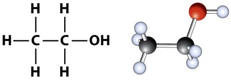
this little doggy is ethanol
it dissolves in water because of that OH thing. And that other part of C-C is a little hydrophobic.
It (I +t, suffix of the third person. And in verbs: I do, He does (e суффикс третьего лица, H = И = I))
наша наши - иногда на письме а выглядит как и, и тогда соединяют сверху воедино эти 𓏭
превращая и в а
а одно, и является суффиксом, и похоже что использовался до всего: множественное число, родительный падеж, прилагательное, императив (второе лицо)
а также является соединительной запятой, י
ко мне
со мной
Может эти суффиксы синонимичны, но грамматика у них различна. Не потому ли что грамматика повторяет их ,и тогда к ~ е (мне! ~= ко мне)
повторяет их, и тогда с ~ и (мой ~= мной (владеется мной))
мы = мны? (that ? is similar to ~)
мн как много?
скоко? много - тот же суффикс как в его (и сравнивая его с однокоренными: мне[мене], мной, меня) тогда с ко is with que?
следующие три строчки просто гадаю, черновик во весь рост:
а я, меня
и мне
о мной ~ мой
I don't know if I told about it (I'm not high and in this condition I memorize more than invent) anyway,
N and S are clockwise and counter-clockwise swasticka's elements, which is weird, because if counter-clockwise is отворотный, and clockwise is приворотный, then why does N stand for No and S for yeS ore Si? is s = t I asked? is "s = c = d?"I ask me now
d is cl
D = CL? I saw it today in a dream, where it came to me as Sure it is! but what did it look there like which made it obvious? lↃ maybe. or lƆ, 𐩧𐩽?
And then I realize, that not only have russians turned their letters counter-clockwise,
so H is И and N is Н, but also lucky people's nations have the element of lucky swastika in their alphabet (N) and russians only have the element of unlucky one (И)
But then again, what does it tell of S? Is Z more based or what? Or does the smooth form of S make it something else? How can it be unlucky if it switches from counter-clockwise to clockwise?
The true answer is I don't know. I only figured that И/N thing like few hours ago, what do I know
But it would be a nice experiment if russians would turn their И & Н clockwise to get H & N and didn't adopt S, but maybe Z though, using C for all S's as they do today, and K's for all K's as they do today.
Z would make their Задница не такой полной.
are Ж & З жопа и задница? If that's how the alphabet ended before numerals IVX were incorporated in their canon, it could make perfect sense. Волосы Голова и так далее?
So, the only good explanation for why No uses clockwise (приворотный) symbol, and yeS uses the counter-clockwise (отворотный символ) is the hypothesis that they used to be the other way around, because when these forms were invented people drew left to right. But that's just a guess, and it needs some data to be proven or disproven, and yet I have a good way to test it: we must collect text from the most ancient artifacts, and to see how S and N go there, but I think it will fall flat, but I have no better explanation of that inconsistency, only if that idea of them swastikas encoded in those letters is baseless.
Another observation of the sun:
I came home after a fortnight outside,
got high, saw a setting sun, and observed it:
it was sitting above houses and it seemed that it went up when it saw me, and it probably was some optic or psychic illusion; either way, I saw some rainbow spectre again and I saw some orbitals: light from the sun seemed to have some concentric rounds around it, like the one I saw around a burning match but much more in number and much tinier in width, and other vision was some отрезки спектра как лучи (по радиальным линиям появлялись отрезки (одинакового размера, но на разном расстоянии от солнца, кажется на каждом геометрическом луче из центра солнца было по одному отрезку (я посмотрел и не видел опровержения этого предположения) отрезки эти были цвета радуки, т.е. предполагаю что по лучам шёл более широкий спектр, и лишь небольшой отрезок (все отрезки были идентичных размеров и окрасов) радугой представлял видимую часть спектра. К сожалению, успел заснять лишь зашедшее солнце, но вероятно мой телефон не взял бы такую чёткую картинку, тем более против солнца. Завтра попробую или когда ещё увижу. сегодня понедельник, субботу воскресенья я был не один, потому не дубасил и следовательно сюда не заходил.
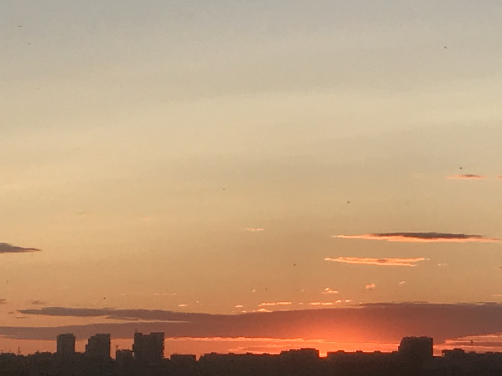
as you can see, the sky itself is also a rainbow: it goes from red to blue with some lack of green, and yellow is only in the clouds, I'm not sure it counts, it could be just some red and blue which are just on spectre, but are not of spectral nature.
Either way, I will find some good optics and will film it, I think I will contact some profession photographer tomorrow, or even two.
I hope I will deliver soon in language thing with that a-b, a-d, when I literally divided words by meaningless letters. So vowel is no, and consonant is yes? consonants are different: b is in, d is off (de)
but something, vowels are just connecting voice, and probably first consonants were meaningful and vowels were just melodical. And later they began to use vowels as negation, but it probably grew out of interjunctions interjections like oh, ah, мол ну да; да, но; да не; и как мы знаем, порядок слов не принципиален (разные народы лепят кто во что горазд)
Сегодня слышал, что русская орфография была стандартизована лишь в начале 20го века, а до того лепил кто во что горазд:

(он о том, что я сказал в предыдущем предложении, говорит где-то в предыдущих 20 минутах)
The following two screenshots are also from there, I think they belong here even more that that one:
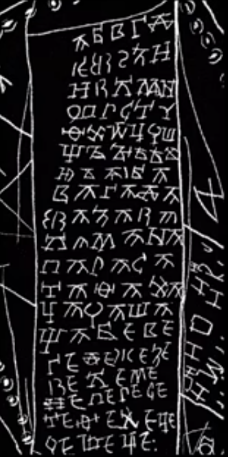


I wonder why their Л looks so similar to glagolythic М.
I don't know why unicode show it like this: Ⰿ, because it is
In case it's a bug and they fixed it, here is the same in png:
Something similar to what I observe around the light source is Brocken Spectre, but what I observe has nothing to do with water, it can be seen in absolutely dry room, photos are yet to come, but here what I could find so far:
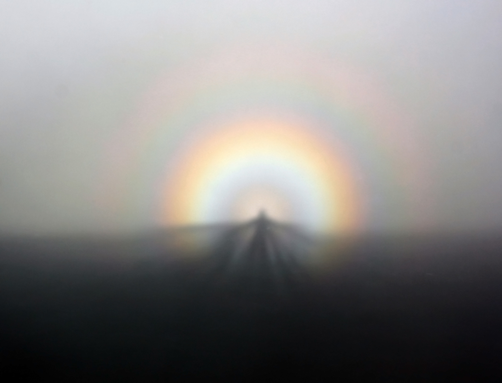
And another interesting phenomenon I never knew of and neither did most of you, Gegenschein:
In modern times, the gegenschein is not visible in most inhabited regions of the world due to light pollution.
I think optic is my next favourite thing,
That pink part is called Belt of Venus, and the blue beneath it is the shadow of the Earth.
But the phenomenon I want to discover even more is the way some tiny light source behaves in a dark room or a plane: when you raise your hand between your eyes and the source, the light is closed from the opposite direction, I wonder if it has something to do with camera obscura flipping the image or is it some glitch in the matrix. I will write more about it when I know more about it.
So my guess is what?
tthere are several:
Because light is of wave nature, that wave has some spectre and thus makes rainbow?
But sound is a wave and it may keep the same tone. Sun also as any star has it's
That word rainbow I use all the time is not the phenomenon of rainbow we kow, but more wide concept of iridescence. I'm not even sure this term is correct, so I simply say rainbow, so everybody knows what sequence of colours I am speaking of.
Either way, this topic is its deception, and I will deliver on it more coherent and legible.
New thing I found today is that word "sweet!" may sound as sucking something up, like a noodle or with a straw, almost a kiss.
All the story is written down. But it is written one piece at a time at some place.
Aum is only known to europeans as omen, in plural. Aum is one sound, not three, it's a nasal A.
An. One.
A is potentially nasal, and maybe that's the route some people pronounce it as O
Some nations pronounce pot with o, and others use [a] instead. Americans do, and that other channel I've shown you tell that it's more ancient form of english:
https://www.youtube.com/watch?v=7p_BFdOjZVE
or
https://www.youtube.com/watch?v=GRrsSPddg6A
and it's in russian.
here is where he tells that americans read o as a: https://www.youtube.com/watch?v=56qwv_Jcg3c
And watching that previous video, where he tells that hot dog is somewhere pronounced as hat dog, and before that cot and caught is compared, and both are a's, and it comes to me that o and u are just variants of a.
a is the full form, and o and u are underdrawn.
And because double a is o in dannish,
And bornholm runes are dannish, and there o is ᚮ the double ᛆ the a, and aa is o too.
o is pure a, the golden middle between a and u
u is oo, so it's a, aa=o, oo=u
o is in the middle. A is a cool way to pronounce it. It was the same, Om, Aum aUm it also was some accord, согласованное последовательное движение звука по спектру как радука.
Радуга is not alphabetic, otherwise imagine how extatic I would be, Would I? Raduga have some transparent etymology, but then you have to recognize that russians built pyramids? Or at leasgt that russians worshipped Rah. Rah-shins (shin is humans? 神 is shen, god in chinese. in japanese it's shin.
清 is shin in japanese, qing dinasty of china, where it's also clear, clean, distinct, quiet, thoroughly, completely, and it sounds like chin, that how chinese transliteration of qing is read.
心 is shin in japanese, xin in chinese, sounds as schin (щинь) and as japanese didn't destinguish x from q, so is both words are written as しん in hiragana. Weird transliterations of x and q was from portuguese and who knows who else, so I think, but who knows if it's true. Because they didn't have russian щ. That is palatalized sh, which is x. but q is ch. And it reminds me of gothic alphabet:
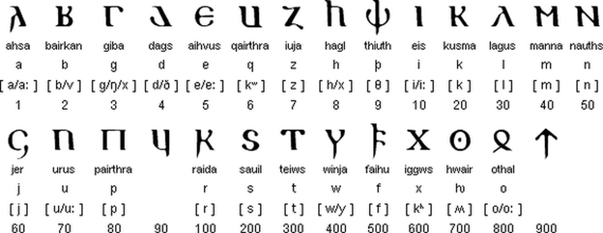
as you can see, in comparison to lating it has some letters lacking strokes at the top: R looks like K,
B looks like upsided down R, D lacks part of the stroke, Q of 6 and Q of 90 lack a stroke at the top, and that makes it remind Ч, as that q sounds in chinese, which I discuss above.
What's going on? I didn't change the масштаб, but letters seem to be tinier, and they're in the same font. Is it another example of world shrinking and we getting used to it and then we croak, I thought there was some term closer to shrink, but it seems google translator get worse: it doesn't know скопытиться, but mistake it for скопить или скопиться.
And then I kind of get used to this font and it looks normal. But that font at the front line seems smaller because it's compared to the similar (but slightly larger) font above it, in the image.
Notice, how gothic p reminds u standing before it, and very similar to ᚢ.
Го́тский язы́к (готск. 𐌲𐌿𐍄𐌰𐍂𐌰𐌶𐌳𐌰 (gutarazda), 𐌲𐌿𐍄𐍂𐌰𐌶𐌳𐌰 (gutrazda), 𐌲𐌿𐍄𐌹𐍃𐌺𐌰 𐍂𐌰𐌶𐌳𐌰 (gutiska razda)) — язык готов. Относится к восточной группе германских языков.
And letter ᛟ shows closer relation of gothic with runes. I think I read that the oldest runic writing is gothic, but it's probably that the oldest gothic writing is runic.
Out of about a dozen candidate inscriptions, only three are widely accepted to be of Gothic origin: the gold ring of Pietroassa, bearing a votive inscription, part of a larger treasure found in the Romanian Carpathians, and two spearheads inscribed with what is probably the weapon's name, one found in the Ukrainian Carpathians, and the other in eastern Germany, near the Oder.
I wonder where I can see the other 9, and what are they? Yet here are the three they mention:
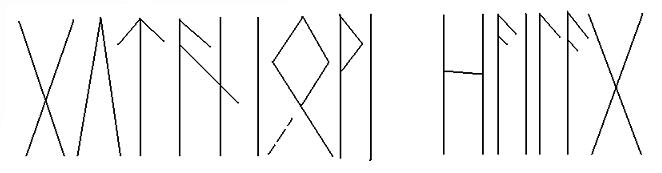
as you can see, the transliteration ↑ here lack a ᚲ:
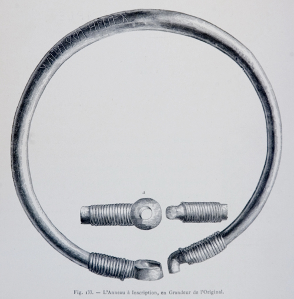
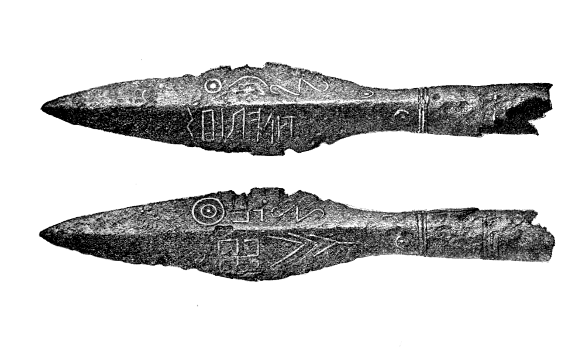

Внезапно, возможно разглядывая свастики на первом рисунке: атакующую сверху, защищающую снизу? и я подумал о колесе и том как можно за прутья взявшись подняться в карету как по лестнице ли, а если ле ловкий и смелый, то может и на движущемся так запрыгнуть, но так делать не надо, тем более на современных скоростях.
卍 is forward, and 卐 is backward, because those г's are legs. thus they're L's. and as you can see, the word L has lucky turn of the leg. L is leg. Now I see. Let's beging the abecedary:
a b c d e f g h i j k l m n o p q r s t u v w x y z
That azbuka is what I came here to make, to start it from a good foot.
begin looks like beging because помолясь
bog and beg is like caught and get. get = catch? cognates? probably. dialectal readings
"The oldest known runic inscription from Sweden is found on a spearhead, recovered from a grave at Mos in the parish of Stenkyrka in Gotland. The inscription, consisting of only five runes, might be dated to the end of the third century of our era." Sven Birger Fredrik Jansson, The runes of Sweden, Bedminster Press, 1962, pp. iii-iv.
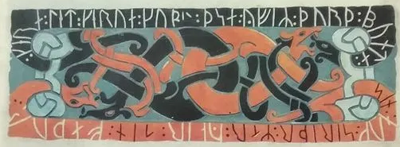
This image, placed on the cover of that book (reverse image search shows it is only present on it, so it's probably a replica of some ancient thing. Let's look inside to see if it has it)
vowels bowels? vow is bow? I didn't expect bowels here, I only thought that vow is pray, bow.
bow is not only a gesture of reverence, but also a weapon. and that weapon bow did use bowels as its string and a gut called catgut (though it's usually made of sheep's gut) is used in musical instrument which is played with some other bow, the fiddle-bow (fiddlestick is rememed by some comix creature) but that bow the fiddle bow uses hair instead of guts, so they play with horse hair against sheep guts. And that is very pleasant to them. It's very pleasant to me too, I think I've shown you this video earlier,
https://vk.com/video58166550_166661043 (to see it you have to register at that kgb-ridden resource, or you may find Janine Jansen in Prinsengracht concert of 2005 somewhere else.
https://artsporn.com/watch/58166550_166661043 is an online resource allowing you not to register.
and it also allows to download it. Whenever I share some information, I immediately receive some more of it.
the in that
a in it
show that vowels are the same, the same first mother. which I noticed in negating prefixes. a- in- un-
am I weird? is it some font different sizing or did that line at the first page of the old version got smaller? How could I make it that tiny? I don't remember what I was thinking. Either way, that physical idea of the world shrinking makes me collect the evidences in support of that hypothesis (in support = supporting: processing is in process)
is it go-t (го-о) adding г's to чё and act in'?
does form что (а не только чего) говорит, что т ~ г? ᚲ and ᛐ or is ᛏ another form to place ᚲ on stave?
Today I managed to take the photos of the setting sun, but I didn't see the rainbow rays rayin'bows? either way, but mostly because I was focused on the phone. photos, phone.. it was not together at first, it is funny, because now they are. So the most rainbowish rays are on this one, and they're not very rainbowish, not very iridescent. Either way, the experiment was not pure because of the clouds above the sun, but there was no or almost no clouds directly at the sun:
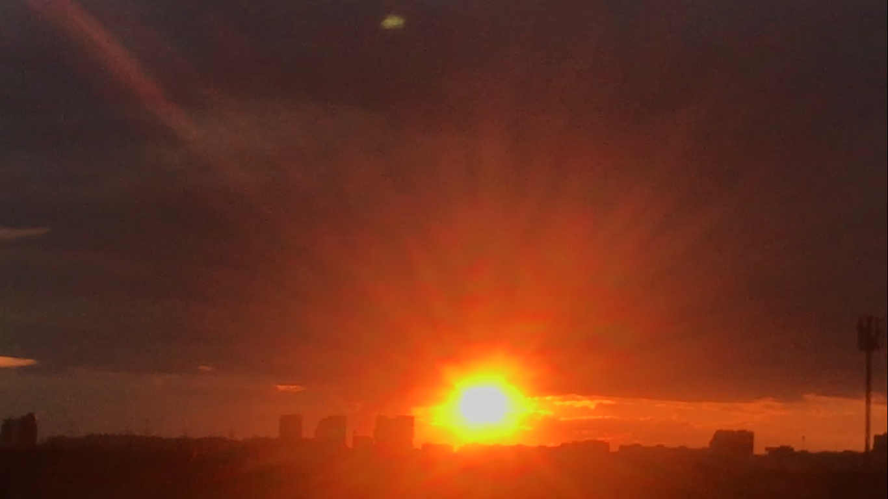
so that the spectre of the sun itself from red on its outside (and all the rays look pretty much redish with some yellow pouring into them from time to time and from some points of view:

but most of the time the sun itself was iridescent: redish orangish periphery, yellowish greenish closer to the sun and some pale blue in the centre. Is it the closest to the white because it's the most radiant, the most powerful part of the spectrum, so we're taught that sun is mostly ultraviolet? But that is not blue but grey, it only looks blueish against that yellow.
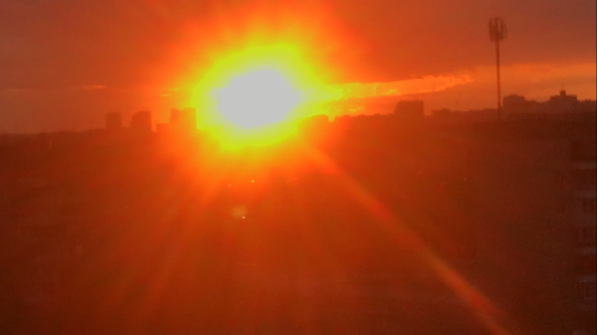
I didn't use any filters, these three are screenshots from the video I took during the sunset.
Next time I will watch it with my eyes to first see those отрезки о которых я писал, или концентрические круги вокруг солнца, а затем попробовать сфоткать. Не знаю в матрице мы или нет, но психика каким-то образом может влиять на видео: когда я смотрел на ковровое покрытие из точек, расположенных под 90 градусов друг к другу поду углом 45 градусов, так что виделись они расположенными под 60 градусов, то я видим отрубал фильтры и видел начинал видеть зыбь (нойс непонятного происхождения) и я играл с этой зыбью фокусируясь на ней, и видел как она принимает разные фигуры, что может погло могло быть парейдолией уровня фигур в телевизионном снегу, но могло быть и проявлением чего-то другого, потому что когда я смотрел на эти точки прямо и видел их квадратами, зыби не было, и когда я начинал снимать, этой зыби не видел и телефон (но сегодня пересматривая те видео, я видел что даже на этой второй и чёткой записи зыбь присутствует в меньших количествах по краям экрана. Очищу от звука, обрежу от шлака, залью сюда далее в этом томе. Вернусь к этой теме.
I wonder how it was just one day and the sun sets (sits) so closer to the south, to those three houses, that at that rate tomorrow it will be between the first and the second one. We'll see.
it was 27th of july today. and now it 28th, my birthday.
How comes both as and but are such basic words in the english?
a~b (ass~butt)
bu is that nasal part of the a? ab = aum?
and what is cd then? the sme a same g?
антоним жопы голова, и может монки си этв монки ду фку are the that
куф рош?
was q some monkey sound other nations never knew? I just make some inhaling ы or э imitating a monkey?
eleven ~ elephant? not necessarily, but may make a great rhyme
are job and jog the opposite? like Б and g?
Similar form is p in glagolitic: Ⱂ
underneath and поднизом are one is a calcque of the other.
then under = под, and suddenly I recognize o in p.
un Aтец is Папа? Как бы парадоксально это не казалось, А = Б: first Б was the head of the hourse. Then A became that, but probably in different places they came at different time the tradition and the change in the writing system. Is it why georgians call daddy baba and mommy dada?
un of under as под is seen in по standing for on. and because п & n are so similar, especially in coursive: п n, that maybe on was up, the inhaling form of the same по?
under and под are literally cognates? panda? manda! and suddenly I see манда as M(other) underneath.
neath is translated as под for the sake of translators, not to make it obvious that neath has a cognate низ and yet in georgian it is translated with a cognate, I wonder if for the sake of translator or because they use it like them:
hearth is очаг, не потому ли heathans are called so. To survive on the north you have to leave as hearthans: desert laws will not lead you to success, people are not softened by the sun on the north, here we must have axes to survive.
U was felt like the utmost underneath (even though up is up) юг, союз (south) both have u's
север, норс, both have s & r.
if s in south is a prefix to the common юг, then is s in север also such a prefix? without it it's ever, and that could be the name of the polar star. But astronomy tells that it was not the polar star all the time. But I doubt it. But either way, for the last 4000 years the north pole of the sky is in the three dippers of ursae and drago. ursae are female (at least in russian) and drago is lingual and probably male (in russian it is) and medveditsa are pretty labial in the beginning of the pairs o its name: mad and wit (and what if this is the actual etymology? What if maed used to make us mad? Because we found some ancient hives of tons of high-pressured honey? What if we found where bees lived for centuries and we don't know of such places anymoe, because they all were robbed millenia ago. since then not only the trees are tiny in comparison to what we used to have, but also the hives are usually one-year old.
But I have to prove that honey by itself may become intoxicating. Lots of honey with the top of the hive broken off by a bear or a man can collect rainwater and come through whatever processes turn honey into maed. so russian medved for a bear could be not of that he knows where the honey is (why would we care) but that it's crazy and smart. or mad and wait? or mad and bad? Sometimes "bad" is used for something smart, like in badass, it is not something bad, it's something awesom, everything good is bad and everything bad is good. What if that is a ritual song testifying that the semantic of those words was changed by some supersticion maybe?
помимо жара есть ещё одно подобное слово, способное быть билингвой двух диалектных прочтений одного и того же: ожог.
Это всё к слову юг, который как-то не явно связан с солнцем: юг [jug] and jug [жуг, что ближе всего к жёг] jug банка? х.з. может это линзой было изначально, и банки из стекла линзами назывались? jar is not necessarily a jug. but they could be cognates, some dialectal form of similar things by similar words unified by being accepted by both dialects and further into some standard.
штандард значит знамя, стандарт как знамение? как знание!
not ever art is kunde, but standing art is standard, the way others may repeat and be satisfied. And orthographic norm of d instead of t was made whether to avoid the homonymity or to conceal the cognatism. And whether the will was good or bad,
whether is of weather (it is something the future depends on: good weather I come, bad weather I won't could be further simplified to whether I come or not. whether here is good whether, по году. and or then would be the short form of other. other is not there? other is not they, not their: others are not theirs.
Initial vowel is always a no? What is I in Initial? не = мне. не = me.. I said it before, but in this context it's great.
Let's begin the dictionary of cognates, or rather let's call it..
mnemonic dictionary
not to be blamed for arbitrary etymologies just because they help to learn foreign words.
under = not над.
под = fu at? (fu = no, today is only seen in some interjection of similar semantic, but actually its' a chinese word, and that's why is seen as slang, net exactly integrated in the body of the language with some grammatic forms, but maybe фуёвый это от того же самого фу. фу = хуй? по смыслу тоже может сповпадать (хуй может заменять слово нет, но никогда не значит слова да)
Итак, я добрался до самого мяса. Добавлять это хуй в русско-китайский словарь когнатов? Нет, погодю, я разведу его по языкам, и может тогда туда это добавлю в русско-китайскую часть.
ji is ti in chinese:
https://www.tiktok.com/@yanggemadeinchina/video/6985825609154907393
north not moving? nor the, then the nor.
also ursae make nutsy swastika by their movement through the sky and nothern sky rotates counter-clockwise. Also because sun is generally down there at the south up here.
and you can see that when they look at south, it goes pretty much clockwise,
and that is a simplest proof of the earth being spheric, the way pole on the south rotates clockwise:
So southern sky rotating clockwise and northern sky rotating counter-clockwise is sorta uniersal rule, only in the northern hemisphere south is where the sun is, and thus sun and south could be related words.
The word way roussian count system is retarded and inconsistent may contribute to our irrationality.
https://www.tiktok.com/@yanggemadeinchina/video/6987314183721340161 (mirror)
referal к бинансу божешь ещё раз прислать, регаюсь наконец-то
Это не вопрос, это предложение. т..е. вопросительный знак не нужен
предложения бывают вопросительными и восклицательными? повествовательными ещё бывают.
отрицательными, побудительными, и на сколько у филологов фантазии хватает. А на самом деле просто устойчивые конструкции возникают по причине прикольности или понятности, а правила с кучами исключений являются апофенией обыкновенной. или необыкновенной, моя необыкновенная.
Erika is briar, briar is heath, heathen is in heath, heathers are hearthy (warm, with both hearthes and hearts, hearth and heart)
сердце в середине, hearth is in the centre.
hearth heart of the house.
h house (to the abcdefghijklmnopqrstuvwxyz)
does similar graphic influence psyche? if a man is so blind he sees вор instead of app, who what how does it influence him? Does he become reluctant to use apps?
I just saw it like that and I don' use very many apps. and the last one I remember was instaled because my friend demanded signal phone operator (some encrypted whatever, I suck at i.t. Even though I know that i.t. is it. I have some trauma in my psychic fabric. I need to be reluctant... It' s an automatic (was)
Pythagoras's tetrakti's is indeed the basis of their geometry:
by using 6 of those triangles you can make a hexagon, and hexagon, not pentagon, (, = )) is hexan,
six equilateral triangles make a hexagon and thus 6*10 = 60, the masis basis of shumerian math, the elements of which we still have the number of minutes and seconds, and maybe months too, but that 6*10/5, people need brackets in math only when deal with different dimensions in one expression: pluses and minuses is one-dimensional operations (you need a line to make them) and * and / are two-dimensional: you work with plane or other 2d figure in that. and if multiplication is applied to both of the sum, you need to use brackets for that. And is power 3dimensiona? cube is tridimensional. What? Multiplication gives birth to many dimension, but.. but.. what is what.. is..
an update from the further chapter: √3/2(a) tells that you cannot use multiply and divide as freely as yuo could change plusses and minuses without the change of sum, and if you only in question if you should multiply the upper part or all the thing, it doesn't matter, but if it was something like 10/5*6 then I would demand brackets. And it shows that I could be unfit for teaching. Because I improvise too much and thus am wrong more often.
It is interesting how Pythagoras might have received that pi thing. Is it named after him?
Was it him? I don't know. Maybe, but then stigler's law of eponymy tells that not necessarily, but he probably popularized that math a lot, that's how people get things named after them.
And only have I googled hexagon pythagoras, a whole new world of trigonometry opened before me with something I never was aware of.
I found some magic hexagon, super hexagon, but I didn't get it, so I don't give it here, I'm just aware of such a thing, but I"m not getting it yet.
So I wanted to show you the pi, I wanted to show you that I think there are could be two different pi's as today we don't know if we don't have two different c's.
First pi is the S/D and that it is a little larger than 3 you can see from the circumscribed circle:
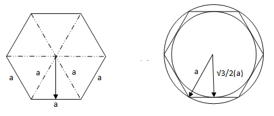
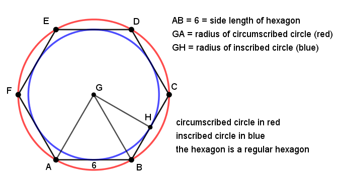
18 could be 6 trirunic accords. руны струны.
струны как старшие руны?
2a in diametre and 6a in the circumference. But then that red circle is larger that the hexagon with the large diagonal laying upod the diameter.
meter measures. meets.
But then we can look at the blue circle and see that not when it's incribed into an hexagon, it sets the upper limit of pi. And when we use polygons with more angles, we can approacth that number more precisely, so maybe in миллионоугольниках пи всё точнее измеряют.
Но как они поняли, что пи используемое для вычисления площади круга то же самое пи?
Давай закончим предыдущую задачу. Сколько верхняя граница пи исходя из гексагона?
12√(R^2 - R*3/4)
that is some wild shit, but that follows from pythagoras theorem, in case you don't remember it:
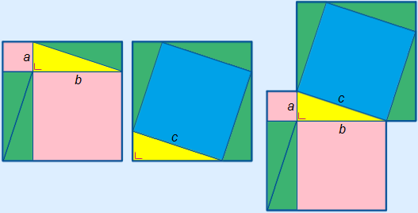 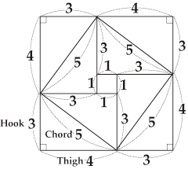
but that abc picture of "pythagoras pants" is still retarded, even when you draw them like that, because you miss one of the tiangles in the lower representation, and if I added it, it would mess the upper diagram, so fuck that euclidean pederasty, yeah this book is not for little kids, science is hardcore.
just as that √3/2 thing: it follows from that hexagon and the pythagoras theorem: x2 = a2 - (a/2)2
x2 = 3a/4
x = √3/2(a), but that is a retarded way to put it, a√3/2 is the way to do it.
So the upper limit upon the circumfirence length is it is not larger than 12r/√3
pi = s/d
thus it's not larger than 6d/√3
thus pi is not larger than 6/√3 and that 3.4641
so pi is between 3 and 3.4641
So let's compare formulas to calculate these limits in hexagons, octagons, decagons, dodecagons and so on, to see a pattern and try to conceive the ultimate formula for the infinite number of angles, and there they will probably have infinities in both above and below the fraction, and we cannot measure those yet. But I just guess, I never try, you do.
Maybe some other day.
Now let's find the areas of those hexagons, and circle's area will be laying between them, and we'll see if the same exact numbers emerge.
and to calculate the areas, we have to use the previously calculated numbers for circumferences, so the larger hexanon is 6 times that triangle which equals (R/2)*(R√3)/2 and because that √3/2 is the approximation to pi, in principle it is the same pi. Let's see for the smaller hexagon: ..
Do my humanitarian self makes some silly mistakes in math?
I need some less confusing picture, here it is:

Now larger hexagon is indeed the radius multiplied at twice the side, and that's 12th of that 12r/√3
Thus larger limit on the one sixth of the circle is r/√3 and thus 6r/√3 is that whole larger hexagon, and that 6/√3 is the upper level of the pi we met before, and we brought it here in that circumference.
And now let's calculate the smaller hexagon: it's 3 rhombi, but though then I only have to calculate one side, the h from the centre to the side of the hexagon, let's stick to the triangles so I don't have to draw those rhombi for you.
by the Pythagoras theorem, R2 = (R/2)2 + that h2
that that h = √(R2 - (R2/4))
R*√(3/4) = R*(√3)/2
thus the area = 6*(R/2)*(R*(√3)/2) = 6*R2*(4√3)
and such pi is 13.8564, thus I made some ridiculous mistake somewhere above.
I don't see how that smaller hexagon returns 3 for the lower pi, only if √3 will be squared there.
Let's begin with finding the h. According to the pythagoras theorem, h = √(R2 - (R/2)2)
and thus the triangle is (R/2)(√(R2 - (R/2)2))
and thus the hexagon is 6(R/2)(R√(1-1/4)) = (√3/4)*6R2
3√3/2 = 2,598 which is even worse approxiamation than 3, and what does it mean? Different pi's only accidentally being the same in the circumscribed hexagons?
But more than this I think that I just seriously suck at math.
Let's wait until I or somebody else gets the larger math brains to figure that out.
Because because I suchk at math. some simple trigonometry and I melt at it.
But "are there two different pi's" is a great question to ask.
But my math ability is so poor, I couldn't even understand the Einstein's proof of the theorem.
And if that proof is true (it probably is) I have to never badmouth him as some freak would do.
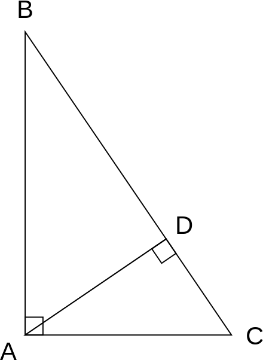
But what if that singler's law is at play here again? What if he only knew it and share it and got credit for it in both senses, and he didn't prove it himself, but he understood it (I still didn't) and he also shared it with the world. Why do I care? What is this math part is here to do? Hold on, we're coming to shumerian soon. Numeral system may have the tightests bonds with the alphabets, so we have to see those 6 by 10 thing or was it 4 by 15? tetractis with the fifth line is 15
I found this awesome pattern and I will draw tetraktises out of it in a moment, but now just try to zoom your screen (whtere ctrl+scroll is all you can, or alt+scroll zooms the scale of the screen of yours)

other arranging of the dots make a different effect when you zoom it:
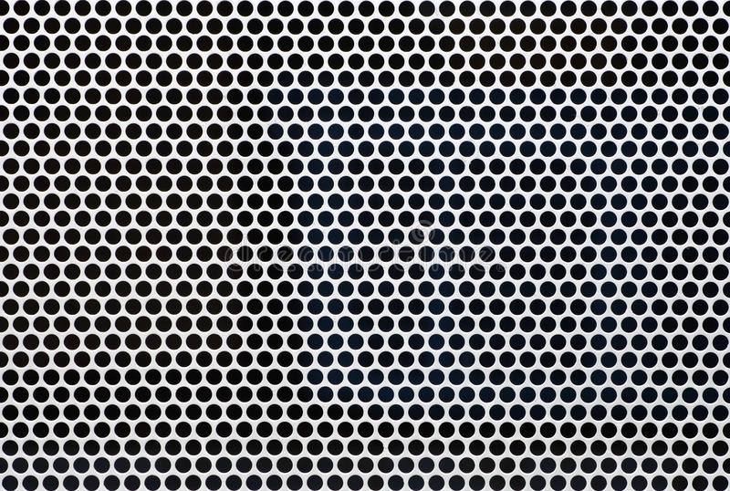
Here the figures are triangular, and on the other arrangement it's squeric.
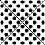
Here I brouught those enlarged tetractes, pentaxes to make the 60 of sumerians, let's make it in the classical 10-digit tetraxises:

And surely enough, that proof by dissection has nothing to do with Einstein:
A generalization of the Pythagorean theorem extending beyond the areas of squares on the three sides to similar figures was known by Hippocrates of Chios in the 5th century BC,[Heath, T. L., A History of Greek Mathematics, Oxford University Press, 1921; reprinted by Dover, 1981.] and was included by Euclid in his Elements
It all looks as if they denied us all the antique science only to return it to us under their deceitful names.
I'm such a kid. And I'm not kidding, I'm some enphantile rebel without a cause or gain or even aim.
A teenager. Rebelious spirit. Loki. Лох.
And in that pythagorean context, the so called flower of life plays with some interesting shades:
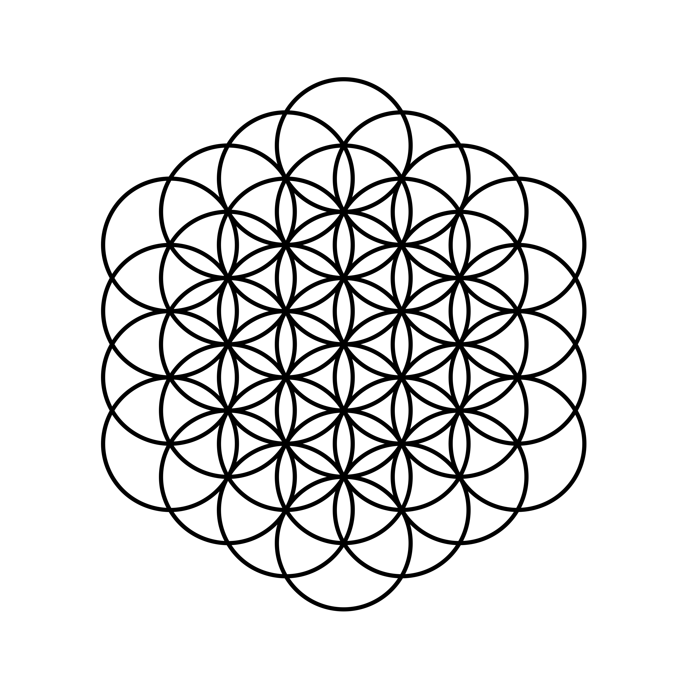
or shapes.
or does it?
ведьмы это ведь мы
ведь мы это ведьмы
ведь мы ведьмы
and of course this line is so obvious it was used before me
..однажды слушая Коянов поймал себя на мысли что что он сука ноет, нахуя мне эта депрессивная волна? сотона, шайтан, шайт, чёрт как дёрт, чёрти что как дёрти чмо, и таких много, вот им в капсулах будет кайф, без сраного социума вне того который вручную отобрал, когда физиологические потребности будут полностью удовлетворяться машинно (как сегодня печь топить не нужно, только денежки за обслуживание бойлера плати, но если людей обеспечить чтоб они не парились на счёт счетов, то как долго и сколь многие из них предадутся низменному гедонизму и как быстро он им надоест, и что они будут делать тогда? достигать высот своих увлечений или предаваться ешё брлее низменным удовольствиям? что сатана для одних вершиной духа для другого может быть наверное, если сатана переводится как враг, то это просто ругательство, но с другой стороны дьявол может иметь то же самое dieu в начале, тогда что за имя? Бля? Bella? Bla-dieu? для кого-то баал, а для кого то рот её баал)
C точки зрения христианина белая богиня - это dieu bella.
bella также как белая (в противовес семитскому, свинскому, сатанинскому)
How does it influence me if I type login-plugin aei.. and I notice that it's russian фуш, does it tell me that russian is фу or that my site is фу? It could be the both, and I could see the meanings in both of them.
And such непредвидимые (не рискну это в английский калькировать даже) обстоятельства вынуждают меня много торговых марок запускать чтоб посмотреть какая выстрелит. Кто бы знал. что x.com не взлетит? тот кто видел в ней ххх или ещё что похуже (xxxxxx could stand for hidden way to enter your password. and thus could fly higher than simple x.com if you advertized it properly, but then some network filters firewalling all the *xxx.com's would cut xxxxxx.com out too.
So anyway, Dr. Highed, Mahead Woodeeman, aeiou.ru are the aliases I use right now, and I need to come up with some names for my capsule buildings yet. But because that enterprise is so much more commercial, I have to do it not here, but outside of the scope of this record.
often of ten
apparent of hundred
obsessed of southand of thousand, sand and south, are these numbers for real? were southerners not aware of the longis for thousands? I V could be Ау. all the rest is m, n, s, t. na-ma-ste!
N before M? N is И? (Η, Н)
Η H Н are all three different letters, nannies ~ mommies? няня was the word coming before distinct мама appeared.
Η as vowel form of it
H as h~п~f as we can see its behaviour in japanese
Н is russian N, and thus we have the same form coming in all its forms. Whas Moon Noon before? Was Noon канун, was midnight called noon (new day, new it, новый он, новый один, новый день)
the opposite of noon was midi? mid dag? mid-day? noon it is now, noon and midnight are the opposites tooday. Who began to call day the night or night the day, and we call it a day.
Η H Н have other forms: N И
and thus the three forms are NHИ or to put it alphabetically, ИHN (unless N is M and H is Š)
if H goes П in japanese, then maybe the actual form of those three is ИПN
how do we know this sequence? like UFH? like lick flatters (льнёт лижет льстит)
льнёт как льёт (истекает слюной ли смазкой ли)
УФХ as ИПН.. well.. maybe.
Х as final T in archaic alphabets
Н the N is the final in voiced half of the alphabet
u and и are u and и
f and p is the same in hebrew and somewhere else flame пламя, fight путч? finger палец?
H form mysteriously variate from vowel I in greek to deep velar H in english and sonor lingual N in russian.
and thouse U~И and X~T are in this story somewhere, I only unravel, unriddle, untangle, disentangle, untwine, unsnarl
a good reason not to bother yourself with terminology humanities make up, they themselves do not:
"Основная терминологическая трудность заключается в том, что фундаментальные понятия структурной семантики, такие, как «денотат», «сигнификат», «коннотат», «референт» и др., трактуются разными авторами по-разному. Сложилась ситуация, когда, употребляя то или иное понятие, необходимо делать ссылку, чья трактовка имеется в виду. Например, «денотат в понимании Огдена — Ричардса», «сигнификат в понимании Ч, Морриса»..."
Recognizing stench and stink as some dialectal cognates, further attested for verb or noun, I have to see cognates in branch and brink - and that's a good example, and both are probably related to brake or bring? Break and bring what is the same? To bring something you have to break it off.
Different orthography in brake is just to distinguish the other meaning. But even today ломай здесь означает тормози (но, возможно означает поворот. слом стоп.
wrench wring? ring? wrinkle?
wrench and wring is great pair.
выкручивать? круг (wring~wrench ring)
w- in wring is that russian в- вкруг (скручивай, даже лучше: вкручивай ~ выкручивай. Вкручивая что-то в, ты тем самым выкручиваешь что-то из, потому в русском формы включай и выключай ещё ближе чем английское от and off, and if o- is un, then n is no, and on is laba, нене означающее да у арабов вроде, только ла похоже на еврейское ло (нет) а ба похоже на китайское бу (нет) and here I must ask are п ~ л? п ~ n! and thus p, n, l are three different ways to read п which probably stood for two and p, n, l are thus three ways to pronounce two in different languages? but I can only see n for japanese ni, and I need to collect the words for numbers in different languages from the region of possible start of that tradition, because why something that abstract has such different names in different languages. Like for how long do we know these words?)
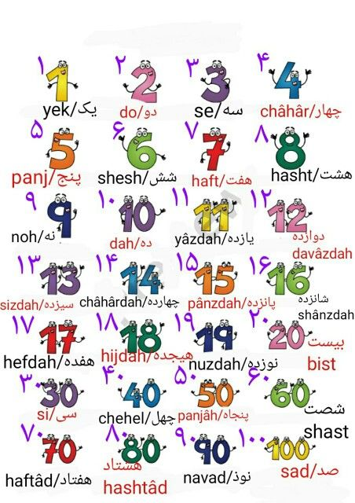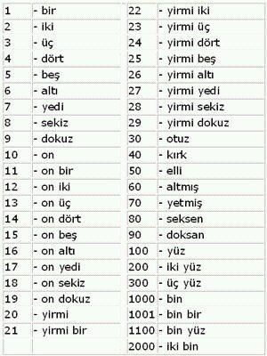
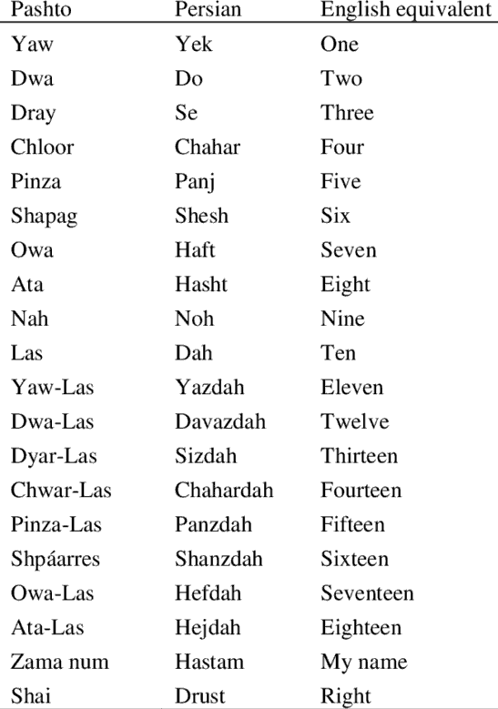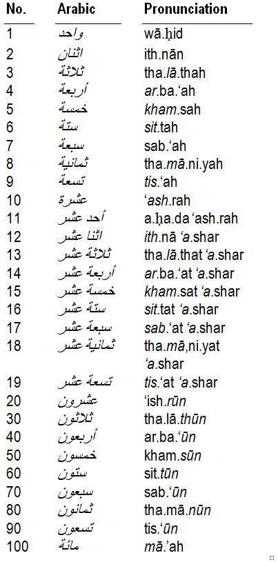

The koptic numerals, supposedly the way they were in egyptian, some words are similar to hebrew:
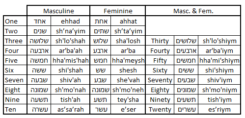
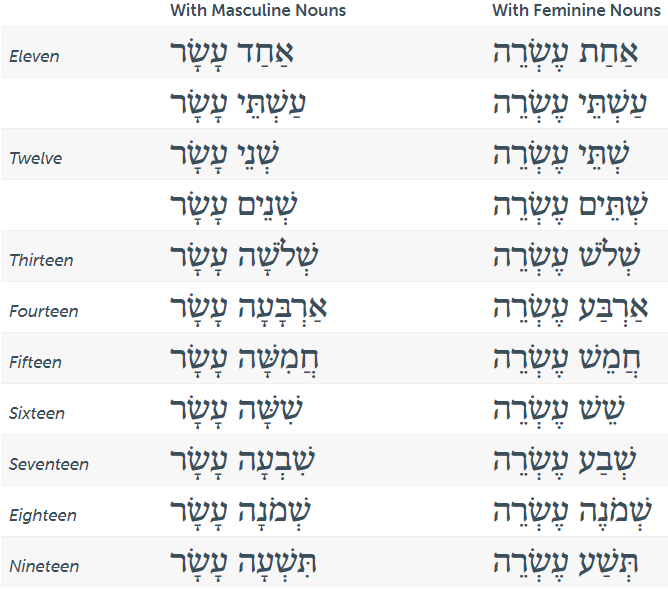
Notice how ע and ש are similar, almost like E & Ш, Ε and Σ
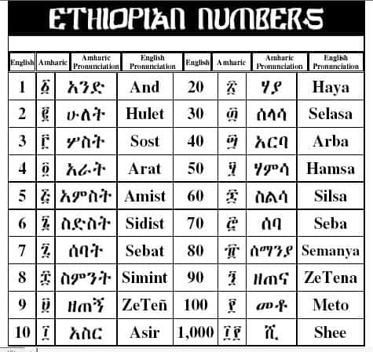
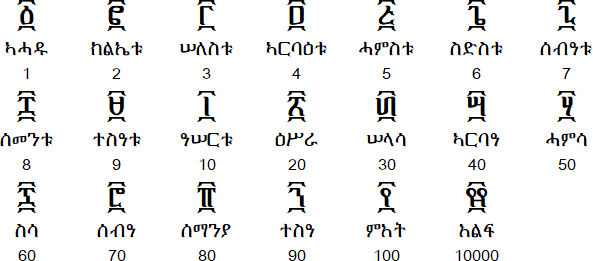
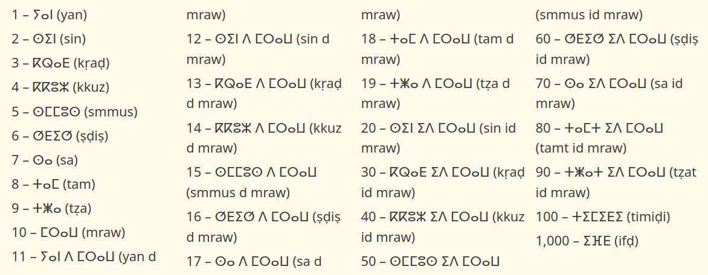
None of these ring any bell. But what am I doing here exactly?
I think I try to keep on delivering, and now I do it at my currently deminished abilities (my sweetest friend made me snort amphetamines before we went to some techno party. I could dance without that shit the same way or even better, but I am rather autistic so I sorta felt like obeying my more extravert friend, so after that we had some cocktails and that was supposed to be it, but.. what am I doing here? I'm trying to explain why it's tuesday now and that day was friday or saturday, and these days were rather empty, and no good weed that could kick that shit out of my head, some weed, but it's only leaves. So I didn't get drunk, but I got about a quarter of liter of wiskey and I don't usually drink alcohol, so it will take some time, I will report when I feel being at the top of it again. until then, stay safe, avoid dirt. And don't forget that those who you admire can ruin you (and those you underestimate can save you, so they say, and it makes reasonable sense) and my friend didn't drink more than one cocktail, but he was vaccinated, and I am not so I was sorta paranoid about all those people and no masks allowed (was it not allowed? my friend told me not to put it on until we're inside and I didn't at all, because when in Rome do like romans do, for someone this revolutionary I'm way to conform)
So let's try from some other corners:
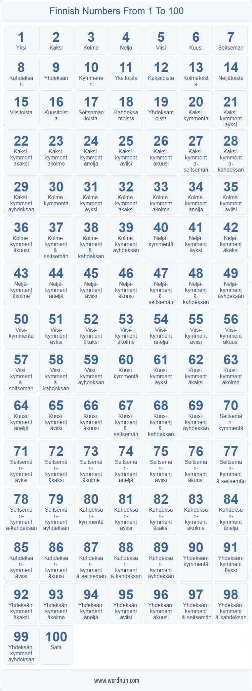
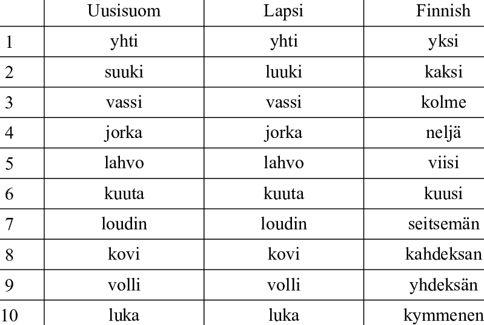
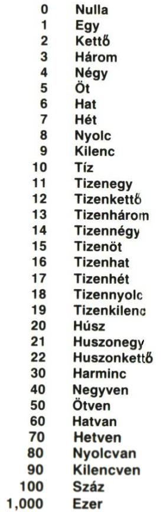 for one language family finns and magyars have incredibly different numerals. I wonder what could cause this diversity in numbers among the nations.
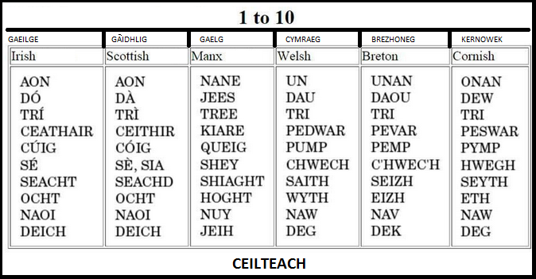
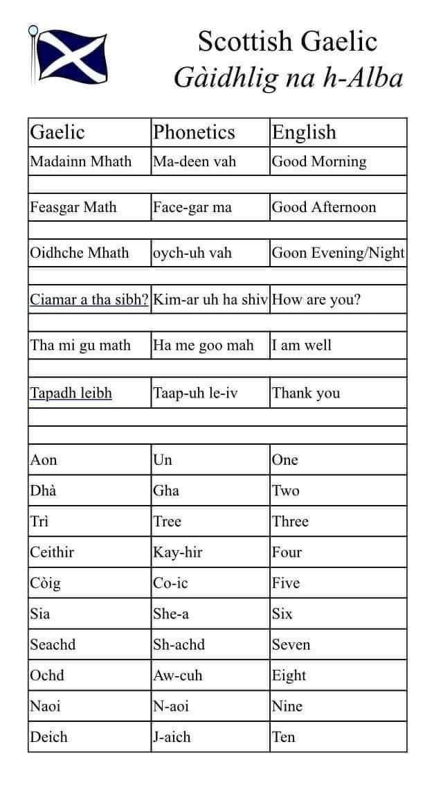
What is interesting about that image is the way it tells that scottish D is read as G, or even J, which is super weird, and could be a key to something, but let's keep on with this collection quest.
Actually that 6 tetraktis as the sumerian 60 thing came to me that night, and I noticed before that I'm better at math when I'm having a hangover, but was it some good math? I think I know I suck at it.
And that numeral thing came to me in this serious post (notice, that it's remembering and not creation of new knowledge, because I was rather sober. Literally sober: haven't smoked before that and didn't smoke too much on the previous day, though it wouldn't make me less sober elsewhere, but I noticed that anyway. gray.) I made few hours ago, over four hours it was, since then I had conversation about it to a fan or fren
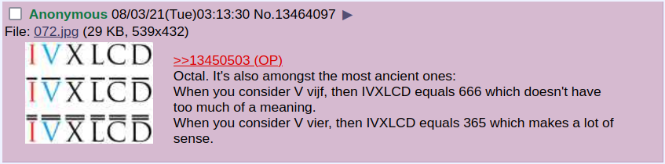
Is it octal or quadral? quadrat, quadrant, square, tetraktis is greek form of it. Why no the most important languages yet! Do it, thanks for collecting them here, I'm sorry I got you intoxicating. It's my social body tells to my brain body. Brain feels biomass loss at its temples, right over the ridge from the eyes. I am crazy. Yes, sometimes. No intoxication when it's not needed. Please!
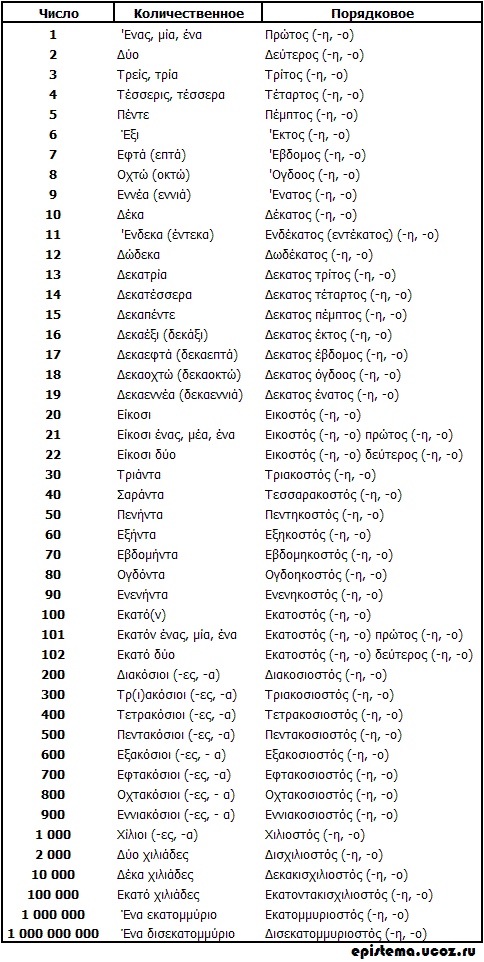
πέντε ~ πέμπτος makes me think that ν used to be v, because μπ is b in modern greek, and who knows if it wasn't so in the ancient one. As I said, the modern languages are the most firm foundament for a research, others are theorized and theories don't describe reality as good as reality itself does.
That was greek, and now the latin:
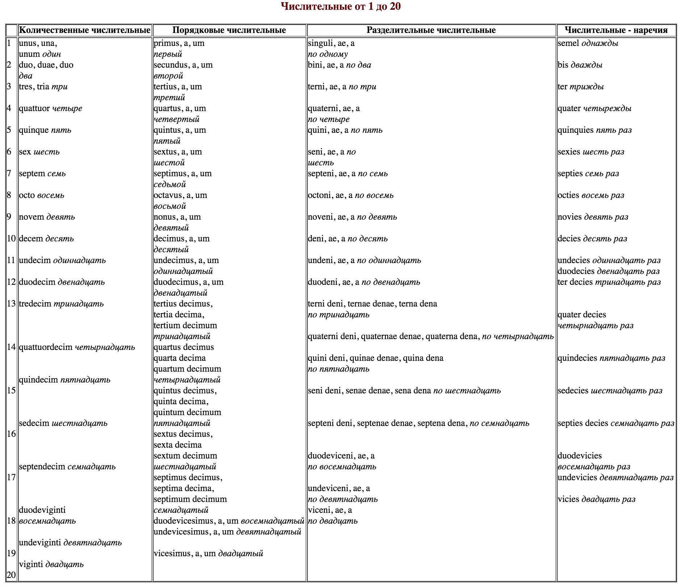

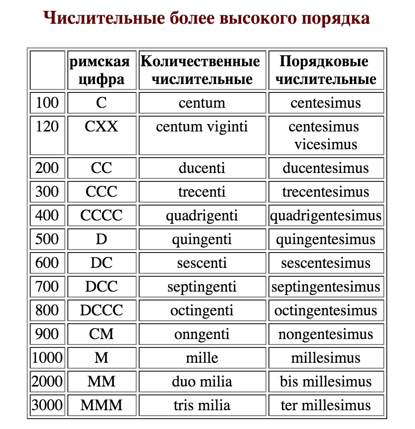
The way C flows into G in latin is fascination! ducenti trecenti, but quadrigenti and quingenti.
And the way they repeat q in two neighbouring numbers make me remember four five, exactly the quattor quince. quni quinque.
Which made me ask. How exactly did that letter after P was read? Surely not as F? Not as fuattor of four and fuinfue or finfe of five? Why I ask is that gothic letter after e is recognized as kw, which could be false, because that letter is supposed to be much more labial than just some kw, and goths were the neighbouring nation of the Rome, so why wouldn't they share their systems a little more than we're even taught. (the gothic alphabet can be seen above (ctrlF gothic) and I'm glad I know russian, because if you search the internet for gothic script you get all the wrong images, which makes me ask what on earth are they trying to hide this way? Or is it just a coincidence)
Notice, how similar greek and roman words for two and three. And notice how greek numerals is similar to russian (except the one, which is more different in all latin, greek, russian, so russians are what? the next in line to greek and roman, but we know that axis as the axis of tradition, but could russian be placed there so that it looked as it was the predecessor? Not if all those axes are the rays coming out of Greece. The portal culture probably taking it from Egypt and all the civilizations in between them. Romans wrote it themselves that Greece is their cultural mother, at least I was taught the way that I've got that an impression.
(you can see russian numerals in the translation of the latin ones)
And greeks and romans had other ways to write their numerals:
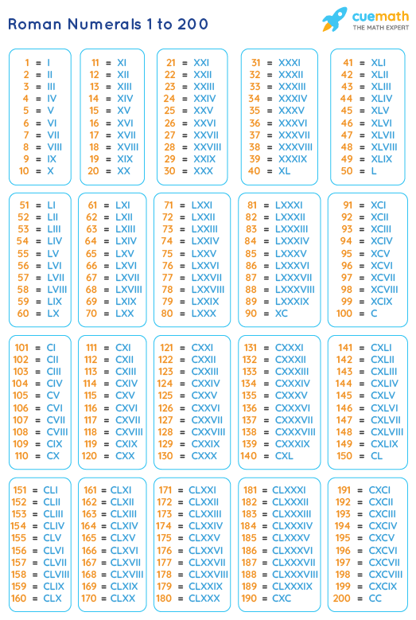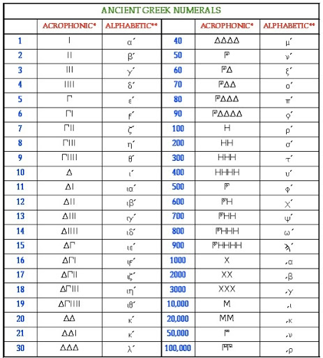
And it made me thinking, what if some nations just read this numbers as I for one, simpli i, double i for 2 as i-i and then i-i-i would be хихихи, and that made me see i-i as H and i-i-i as Ш and then H is labial? It is a very convenient way to roll this letter from vowel in greek to velar in latin to labial in japanese dare I say! and in some other cases it is so it seems, why I didn't remember where. I should start files for each letter. Let's do it for H
The way numerals are read in hebrew: The 613 commandments (Hebrew: תרי"ג מצוות: taryag mitzvot, "613 Mitzvot") - 613 is the number of mitzvot in the Jewish Torah.
And I theorize how IV would be ю or e, because V is exactly the fifth letter then, the way it would be in bornholm canon of ABDEF, wherer F is V in hebrew and some other alphbets. what other alphbets? In arabic it's w or even u, but that is also how V used to be read. maximvs. In georgian! In georgian it's V:
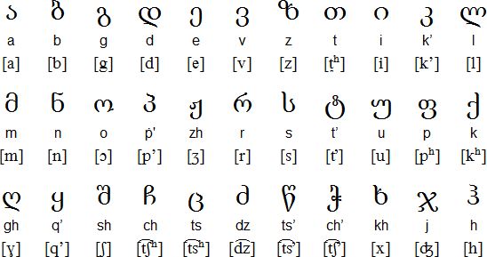
And I found some source on who could be responsible for the creation of georgian alphabet long before christianity, and even there I think it is not the alphabet itself was invented then, but some font of it:
Asomtavruli was probably modelled on the Greek alphabet, and Georgian scholars believe that King Pharnavaz I (ფარნავაზი) of Kartli (Iberia) created it.
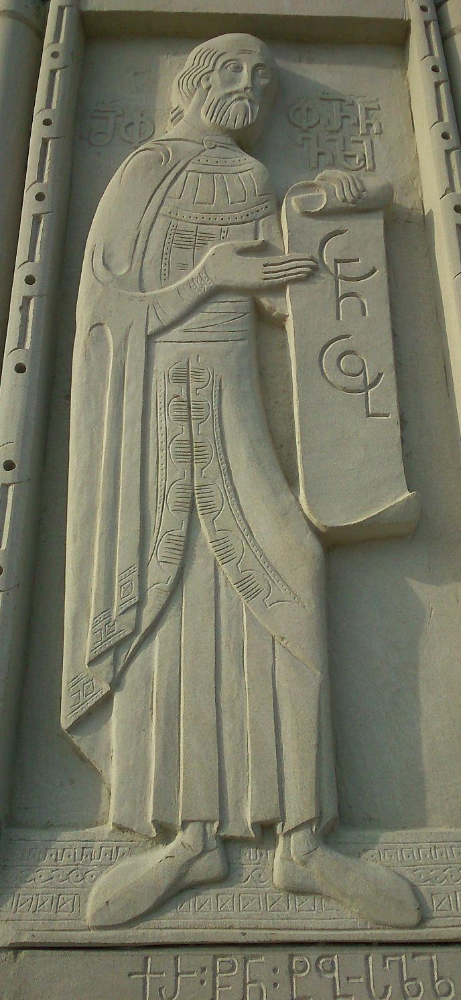
It's hard to say how great and grace are linked, but great and grateful seem to be directly related, and then grateful is next to full of grace, and then grace is something great, the noun form of the adjective great. grays? rays?
I have no idea neither how old this relief is or what does he stand upon, but that pattern could demonstrate three forms like three mothers. And even if the image is not that old, that element could be taken from some ancient artifact standing for just what I said. Georgians definitely know something about all that, why don't I go to georgia to research this thing? I should write to them right now. Okay, I mailed it to the first georgian linguist that a search engine delivered. We'll see if I will ever get a response.
> забористая от слова забор
трава забирает, а забор запирает, но не как запор, а как забор земли. Или если в контексте "запоры и засовы", то даже да. п = б. папа в арабском баба (баба in russian is grandmother)
EFГI is the sequence I've shown before but now it goes one step further. And then I could be the T, the end of the 10-digit numeral system.
The previous
It looks like BEГI (run) and this optical illusion made me see, that before E go В and Б
ВБЕFГI (выбери, and F in such a word could stand out of the mode, like a tritone, considered to be disturbing. dis turbing тюрбан срывает?
BБEFГI
only graphically do they correspond, but in reality it's AБВГДЕЖ(and F is there somewhere)
Ж ~ Ф?
bd
pq
they tried to conceal it by saying that minuscule forms only appeared in the medieaval times, which is not true, sow why would they lie if they didn't want to hide something?
bd
pq
labials have the belly at front, if where we go, or in back, if letters go there, but it's a back part of it if we apply egyptian standard of drawing letters with their faces to the beginning of the line. And that standart has its sense and reason: if letters are the procession, then those who came first are at the left in the left to right direction of writing, and then the procession looks at the beginning of the line indeed.
so we can see where which part of the body is:
b is butt, d is dick, or g is gut (belly)
p is pack (back or backpack)
q is cor?
So why are lower parts voiced? because butt and belly are the
are p and q unanimated backpack and куль (груз в руках?)
butt is pussy if d is dick. isnt't it some lack of academic rigor I afford myself? why did I pull p here?
what's the use of this poetry anyway?
по и под антонимы. д = дно? до?
по до (под диваном по тому что до дивана)
дно до воды. до неё?
Could people who invented the alphabet swim?
butt под?
puss
At this point I do carry in my head more than I had to. Who knows what linguistic information is correct and which is not, I just noticed myself speaking wrongly on gothic (I used to say that gothic q read as f, but in reality gothic u is read as kw, but I have to correct myself instead of surprising you in here, because why disinform when I can not to. But there are many mistakes, forming the lies, and some lies are probably in quotes and pictues too, because mistakes of such a form are called simply lies, and though it is not immediately recognized as a malicious act, but who knows if you yourself believe in what you say or you just want to fool us for whatever reason or if you fooled yourself (made a mistake) or was fooled by someone else, until that foolishness is dangerous
мстить поместить, мстит поместит - хм, почему мстит в настоящем времни, а поместит even with the same syllables stressed, is in the future? Now I wanted to strat collecting the hypotheses the way they come to my head
This text should be like click-bait, very sweet and mellow and every word is clickable. But would so many code hang the system? I mean (я плохой) может употребляться как ввводное слово, но why does it go mea culpa from time totime? Because if you have to rephrase, you phrased it poorly just before, speak clearly. Is my ballance of clear adjusted by my lazy speech when people tend not to understand me.
They say I speak быстро и нечётко. and I tried to fake it and I think I said старался как срался.
Выбрасывая целую силлаболу которую возможно таким же образом кто-то сократил до слог. слово силлабо -ла как суффикс, но чего? brute brutal taught total minimum minimal rectum rectal. hey, why so said so sad, because I cannot find any clear no_suffix/suffix thing? taught and brute are not so good, they're humour. Rent rental, so al is of, and -ен. in and of are antonyms, neh?
biologic biological are the synonyms though. so what is -al really? Some forms of однокоренные слова получаются.
post postal, so it's two against one that al is some form of en, the притяжательный суффикс, суффикс родительного падежа, что-то вроде этого.
офигел ~ офигенен ?
ах да, ел ещё и суффикс прощедшего времени в русском. postal is also posted. And it all comes together because of -ed forms like gotten, ridden, run maybe too. sudden? what is sud? situated?
бегал ~ беган (про ботинки, например)
пользовал ~ пользован
-ed and -ed of the -ал and -ан.
And it was definitely an end of the thought, I could only force it, but I didn't feel need to force something after I was deliverd so plenty just a moment ago.
Тогда давай сфокусируемся на этих -ал and -an
л п н? л как и? ипN
как интересно мой мозг вернулся к недавней теме. он решил использовать её просто раньше, до того как я её заметил, и он незамечал. Таким образом я и создаю свои мозги. Подмечая новые кусочки мозайки этого мира (а я замахнулся прошлое понимать, и может лишь естественно, ято я этим инструментом и в будущее заглядываю (или, может, это другой инструмент, но тот инструмент в любом случае использует ресурсы того, и таким бразом у меня раздвоение типа раздвоения скоростей света, два определения и тождественны ли они человечество в 20 веке не знало. Ладно, я себя напрягаю неблагодарно. Мне дали ал ~ ан ~= ed ~ ed. И дела. до новых..
teeth are atavism (I had to place it in hooks notebook, but I didn't find it)
В украинском -ал is -ав
some powerful thought was here, and probably something else instead of ha
ха
хэйт (I hate you)
хау (ik hou van jou)
love ~ лови
lose ~ теряй (брось? лось? лоси сбрасывают рога. теряют рока рока рога)
no, I really have to go.
but the charriot didn't come, so I'm here. Why am I here.
what does -n -l both are under -d
-r -s -t (that thought instead of xa was something about -r- as some other sound appears when it's ri or ru.. and did I think h between l and d? no. it was something else.
hart like in heart or was it cor? what was that thought!!! That is why I have to record all my thoughts, because some of them tempt tend to run away.
Oh yes! it was about the way englishmen read o as a and a as e and what else is weird for russians? a is a sometimes, but only when it's followed by r, and whould it read any other way if it was some other consonant? and I palatalized R and I got Y and heart turned into hate. I went the other way and I met dutch hou (love, and in it Г and L meet again. H above L.. huh..)
Завещал обещал - однокоренные?
> Нигде не останавливалось столько народа, как перед картинною лавочкою на Щукином дворе.
Nowhere did so many people pause as before the little picture-shop in the Shtchukinui Dvor.
it's Schukin Dvor.
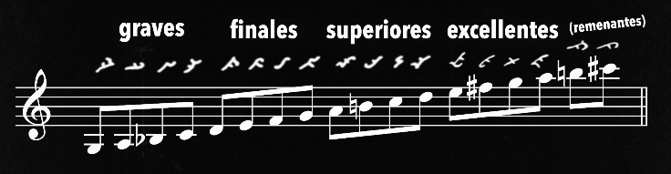
I don't wanna fuck in shit
I don't wanna be fucking shit
I'm sorry for such dirty examples (put them in grey for those who' rather not read squear words. s-words.
s is 𑀩? that is ba (in brahmi 23rd) and actually similar to ם, or am I pulling it?
𐰿? that is old turkic rune of aš /aʃ/ аш is ш [ʃ] in russian.
How comes n'ko ߛ is the closest to the brahmic 𑀩?
How many other similarities between brahmi and n'ko?
Let's compare brahmi and n'ko side by side: (n'ko is in the centre, brahmi is by it's side, use sidescroll)

What came to my attention first (second after the squares) is cross at the beginning of them all. So I suppose they make tradition together with glagolitic, and that may say something about when glagolythic was introduced, and n'ko is thus some ancient writing system. But it's not just parrotted from brahmi, because in brahmi cross is k, and in n'ko it is b R
The way n'ko is aligned is interesting. two times by 7 and the third 7 is 6. phnetically though I don't see any system in there.
Triangles are also read differently: e in brahmi and ŋ in n'ko. Both could be descendance (descendants) of some ancient eng, and what is it in egyptian? g 𓎼 Red jar stand g g ejective /kʼ/
I think k is not some red jar stand, but it's an axe, and it's red because it is in blood.
𓂞𓏙 dỉ D37 X8
That is direcly next to greek Δ
and where Δ is, norsk runes have ᚦ which as I think is an axe. molot tora topor.
and some untransliterated triliteral: 𓇮??? (M44? It was at another triangle which is only in jpg in vol.1)
Mercy is exactly милости. Там где русский просит мирости милости, англичанин просит мёрси, очень похоже на прости, сорри, с ~ м like Ϻ ~ M. милость ~ смелость. С милой смелый.
With mercy russians are brave. English brave is in rave, that is second case b is in in english, let's make special file for it, because I already don't remember the first case.
милости заканчивается на те же суффиксы, что и прости? или если про- приставка, то сти это корень? с корень, ти суффикс. просил другая форма этого же слова. Круто, как полотно в матрице языка прорезал там где прохода не было никогда.
Возил, вести. нормальная пара
просил просить простить. сить ~ стить?
просить простить
прошу прощу
Недавна узнал, что побежал было формой слова побеждал до того как бегит стало бежит. У микитки (как он прикольно заставил его ласково чтоб называли хитрец) про правильность неправильных форм глагола вот здесь где-то: https://www.youtube.com/watch?v=Gm1ucJ6Y6R0
просил простил
просите простите
просимо простимо
но не простимо, а простительно
просительно простительно. просительно слово понятное, но это уже почти что словотворчество.
вопрос вопрост
просо просто
странно.. простить упростить
отлично. просить упросить
-т- суффикс, но что это за суффикс: просить это проститься. просить отпустить?
Oh, some awesome session I had in my bathtub, and thus it is in cardboard papers, here's a touch of it:
Иди с богом, с боком? со споком? сбока собака.
So was this word born when not only b = d it was, but also god = dog it was, as if g and d were separate entities and their position was the question of taste and only later dog became the totemic animal, and god was the way it was in the dictionary? g-d, г-дь, c was g in case you are not aware of it. How am I aware of it? I heard it. Is it correct? Honestly I don't know. But it is this way in greek and russian. And hebrew too. So it's natural to think that it was like that in latin, but I hope they also had some archaeologic evidence for that.
voiceless cat reflects laughing, лающую dog. and by k-symmetry it reflects.
jihgfedgba@opqtuvwxyz
actually, this symmetry is aeiou symmetry, it's just the other half is reversed to make god just dog, but it's god. гад гав. гаѳ.
and what about klmn? well, good question, k is singled out in k-symmetry, and k is not on its place according to the abcd structure, and lmn is element (but I swallowed this etymology, is it even true? I read it in more than one place, but it doesn't prove it either. So it's like I have to solve the jigsaw puzzle where some elements are from some other set, from no set or some other way distort the focus, but hopefully I will be able to figure it out, because the new and new information keeps on coming, and this thing grows not only in width, but also in depth. -ал -ан ~ -ed -ed is a superhit. Such a hit that I ask myself "haven't I noticed it before?" who cares, if I noticed it, I didn't know it, now I do and will be able to use this symmetry in some other context, maybe.
actually at that cardboard there was not this last part of dg qt and around "c was g" I went the other way, so I will return to that, or it will be in papers, but probably not in the papers I will publish in this volume (I said I will do it in the previous one, but I'm rather far in this one and I still didn't sort them out, but I have already placed it on my laptop and converted heic's to jpg's. Now I have to shrink them and place them into html's. It's quite a bugger. Will do. Especially because the previous portion was in the middle of vol.4, and this one is 13 which is easy to remember, or if I make it in 14 it will be easy to remember too. We'll see. 4 13 22 31 40 49 or 4 14 24 34 44 will be with scans of papers, but then again who knows how fast will next portion be collected to the same size. A witch kinda pulled me down on wasting paper. I have to battle her in front of her guy. I believe chicks remove bachelors from their boyfriends friend circle not to lose the boyfriend to an example of joyous bachelor. Either way, battle it will be. She's a friendly witch, that battle will be cuddle in a way) but the next folder of carboards which appears on this site will contain it, and many more stuff. That witch asked me why I fill the papers with the thoughts, and here's why: I have these sessions during which I can pull some great ideas out of my subconsciousness which is constantly working on this linguistic stuff or I weave them directly during those sessions, or they come from some other place, either way they're so abundant, that it's impossible to ingrane them all in this corpus, Actually the thoughts I placed in some vol.5 for example would be new to me because I placed them here only to forget by my operative memory.
But I collect all these thoughts to feed them to some ai one day, and the cardboards appear because it's inconvenient to work on laptop taking a bath, and notebooks appear because sometimes notebooks are more comfy or convenient. EIther way, why is this graphomania here? place it all in gray gravy, duh.
and I got distracted from the comparing of brahmi to n'ko by that bath session. Let's retur to it:
𑀞 is th in brahmi, but ߋ is e in n'ko. So far it looks like these forms are similar only by accident, like O is o in latin, and it's more similar to n'ko's e, but does it actually relate to it? I still doubt it.
Why doubt if brahmi 𑀥 is almost D, the dha. And brahmi 𑀝 is almost C, Ta. But brahmi 𑀞 is tha, nowhere near O, but what if it's because it's Θ, for 𑀣 is some other tha, I only vaguely imagine the differentce between one with the dot and the one without it.
𑀨 is bha, like what is going on! Is 𑀅 aleph? Is 𑀕 𐤂? Like come on! Brahmi is definitely related to something european. And though 𑀗 reminds reversed נ and 𑀱 could remind С[s] and 𑀳 could remind h, 𑀘 (ca) could be related to d, or it all could be so speculative and statistically void, that why is it even here, just to show that I do what I intended. But I intended to compare brahmi ot n'ko. I probably created brahmi to latin before.
I'm not going to compare brahmi and n'ko, because let the non-biased machines do it. I generate ideas, let some other entities test them and develop them further. I heard some people cannot bring new ideas. Should they leave science immediately or should they just use the ideas guys and gals like me have contributed. Or I return to this megalyth with ai some day.
Actually such comparisons should be made my ai on the basis of hand-written and voiced texts, not on the basis of the table when I'm not even sure what the transliterateion means (chinese r is ʒ, q is tʃ, x is palatalized ʃ, and so on. Who knows how it is in other nations philologies, ai, voiced texts, please)
So, what can we do without ai and without obscure writing systems?
Let's play with alphabets I do know how to read. How to read latin? What about portuguese x I never knew to be ʃ too? is it where chinese took their transliterations? well, maybe.
Portuguese портовые guys? Is it why nobody conquered them?
antifa is intifa? intifada? not america first, but israel. israel & their insane fuckers.
insane fucking assholes doing assaninities.
Why do I say so? Who wants civil war if not asholes? Assholes who give shit to th powers that be?
Isn't it worse when an asshole doesn't give a shit. It's not even a question, it is. I guess.
Then you don't recognize him as an asshole, or is he even asshole when he doesn't give a "shit!"?
down used to be dol (дол) in russian: https://www.youtube.com/watch?v=4B3dxC8WY6M#t=13m19s
from the same source, but at 21m: mishkas is forest in lithuanian, which I consider related to мишка (медведь) but I'm such a freak at this point. What am I even doing here? I'm collecting all the hypothesis, it is my тетрадь бреда, которую какая-то книга по достижению успеха рекомендовала иметь.
It is interesting that modern (they say it's mostly russian) fashion to sign positive and negative emotions by brackets of ) for :) and ( for :( correspond waxing and waning crescent symbols of☽ and ☾
Is christian secretly related to crescent?☽☾☾ ☽ (it is interesting, that these signs have obligatory spacebar where the rest of the moon is situated (I unerlined them to show it, and I see the cow horns. And thus moon cult is directly related to the moo-ers cult, and hence the name, I suppose) I like it that brackets close with the growing moon, as if what is between them is newmoon and thus dark (or in my case they're gray)
Not necessarily, but it may be used as some wicked rhyme in a religious song.
Both christians and the crescents may fuck of in this krai.
crescent срезан? срест ~ резать? огнём и мечом. олимпиада прекрасная замена войн: олимпийским огнём и мячом.
So was огнём и мечом поэтической формулой, которую пришло аж перефорщивать (мяч более популярное слово, чем меч. мяч от слова мять?
Are two angels at our shoulders elements of schizophrenia we got as folie à deux from dnst3-infested?
a
b c d
Е ж З
am I tripping or does coursive E mirrors З just the way b mirros d? (как бог и дьявол? как бог и дьявол. В английском оно так не работает, там не b & d противопоставлятся, а g & д. I wonder why g goes below while д goes above. d as deus, not only devil? g as гад, который ползёт? и змеепоклонники-христиане и рептилоидность авраамических религий может сюда относиться каким-либо образом.
or
a
b c d
e
f g h
I came upon this shorter version by accident, when I revisited russian axial symmetry without Ё & Й, and there whether е or и were cut out, and if it's е, it's four in latin and actually five in russian. And if we look at norsk ᛆᛒᚦᚾᚠ (whether dannish, or who knows some predecessors of russian maybe (because it contains almost Ж and exactly where russian has it, russians add greek З to it) )
then F is fifth, which is great, but the word four (vier as for ו) and of how much the form of F reminds 4, it all demands further abbreviation of the alphabet. Whether F was before E? for E as 5 would be normal and graphically it would make sense no less than this:

And then.. is 🯸 7? It would make sense in the 01234567 base set. Which is octal, though not the same way roman IVXLCD could be octal if X was 8 so I suggest it was before Zen and thus before Zero, then some 𓏣, 𓏭, 𓏥, 🯴, 🯵, 🯶, 🯸 or if it was within that chart then some 一, 二, 三, 🯴, 🯵, 🯶, 🯸 would be numbers 1 to 7 (не потому ли семь и восемь настолько похожи в русском?) другое дело, что это уже фрикота просто запредельная, но я себе ещё и не такое позволяю.
I only knew this sequence of georgians:
ა ბ გ დ ე ვ ზ თ ი კ ლ მ ნ ო პ ჟ რ ს ტ უ ფ ქ ღ ყ შ ჩ ც ძ წ ჭ ხ ჯ ჰ
But I found a much more abundant version:
ᲐᲑᲒᲓᲔᲕᲖᲗᲘᲙᲚᲛᲜᲝᲞᲟᲠᲡᲢᲣᲤᲥᲦᲧᲨᲩᲪᲫᲬᲭᲮᲯᲰᲱᲲᲳᲴᲵᲶᲷᲸᲹᲺᲽᲾᲿ
and I notice that the font is somewhat different, and indeed there is another set:
აბგდევზთიკლმნოპჟრსტუფქღყშჩცძწჭხჯჰჱჲჳჴჵჶჷჸჹჺ჻ჼჽჾჿ
And I look at the first new letter Ჱ and wiktionary tells that it's Eighth letter of the Georgian alphabet.
I go like what.. and what is it, indeed:
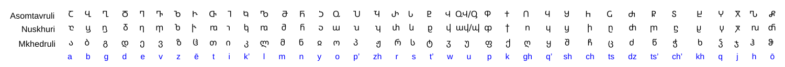
And I googled "ა ბ გ დ ე ვ ზ თ ი კ ლ მ ნ ო პ ჟ რ ს ტ უ ფ ქ ღ ყ შ ჩ ც ძ წ ჭ ხ ჯ ჰ" and I found that I looked into it in vol.8 and many other related finds tell that it's quite alright, I was not mislead, and here's a piece I found yet in vol.8 and since forgot: The Society for the Spreading of Literacy among Georgians, founded by Prince Ilia Chavchavadze in 1879, discarded five letters from the Georgian alphabet that had become redundant: ჱ ჲ ჳ ჴ ჵ
and 3 or 4 of those 5 did mess up the structure. So did he know of that structure (than why didn't he place მ among labial column? Maybe because it is მ ნ and some story is connected to them, but not to be this speculative, I have to read into what that prince Ilia Chavchavadze wrote about why he removed those particular letters. Could it be that they were introduced by christeners and yet georgians never applied those letters or those sounds? A hypothesis, of course, I have to begin with Daniels, Peter T. (1996). The World's Writing Systems. Oxford University Press. ISBN 978-0-19-507993-7. where that quote links fro wiki where I found it.
And there are many more letters I can explore: ჶ • (f) It is now obsolete in Georgian, but is used in Laz.
when was it introduced, whe has it become obsolete? questions, questions..
And in vol.8 I pondered on reading some of Chavchavadze and I never did, and it's not too fat a chance that I will. I suspect that he was never translated into russian and so I asked some georgian scholars for help, I hope they answer to unaffiliated emails.
And looking into it i found this interesting scan:
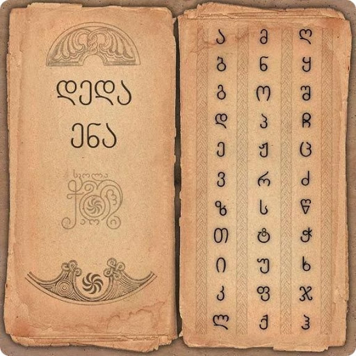
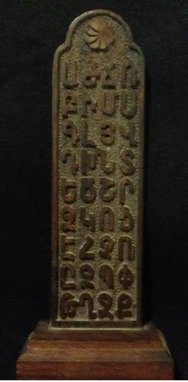
and that ֍ made me remember that I saw something very similar,
only in armenian alphabet, at some random artefact I acquired
during some bookinist shopping,
and there it also depicts ֍ not ֎ yet I wonder why,
and both signs are in the unicode directly after armenian alphabet
and the following image shows that it is some
kind of tradition in the region:
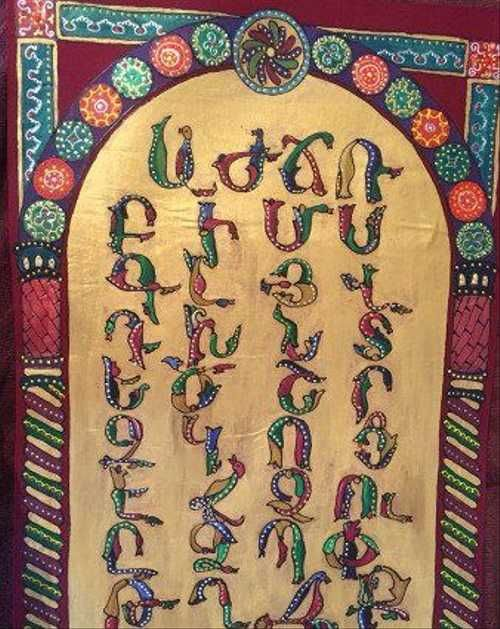
but in this one it's rather ֎
This incident've shown that I don't know what I said, which is also great: I can be independent even from my self the way I avoided books on the subject not to repeat their mistakes, and now I know I can check this text to consistency against itself.
So I don't even watch what I wrote about it in vol.7, but I go with this image further:
{kind=link}
(I cut out those letters Mashtots added,

I pasted out by some tender colours letters that are not in glagolythic in the case of samekh or not in latin in the case of o, which is omega russian scripts also have. And in yellow it's (maybe occasionally, as words with f are foreign in rusian, a labial following the vowel omega. and it actually reminds hebrew coursive ף and ф and φ at the same time. So it could be borrowing from coursive hebrew or some other font of the region, some archaic forms of f are very similar yet I don't remember where, either way that armenian letter links hebrew coursive form to greek and even russian fert or is it fita, because armenian has more similar fert just above it. Why don't I use the armenian font?
I can't believe I never even copied it in my workbook of unicodes till this moment.
ԱԲԳԴԵԶԷԸԹԺԻԼԽԾԿՀՁՂՃՄՅՆՇՈՉՊՋՌՍՎՏՐՑՒՓՔՕՖՙ՚՛՜՝՞՟
ՠաբգդեզէըթժիլխծկհձղճմյնշոչպջռսվտրցւփքօֆևֈ։֊
If it was so much changed, it is probably containing some secrets underneath it all.
It's funny how armenian is so much different from latin, yet it has a little larger but exactly the same հ with the same phonetic meaning.
ՠ is some obsolete vowel, and that's literally reversed ա and the way Աա is majuscule and minuscule of the same letter make me remember Uw and the way it's followed by Բբ reminds me of УФ, which makes me think that maybe U-line is armenian? And then that գ the Գգ reminding q the most of all, which makes me ask, is U-line also O-line, the way it starts with ע in hebrew?
following = followed by
And I leave it here, I'm not ready to study armenian alphabet at the moment. It overwhelms.
Ա Բ Գ Դ Ե Զ Է Ը Թ Ժ Ի Լ ԽԾ Կ ՀՁՂՃ Մ Յ Ն Շ Ո Չ Պ Ջ Ռ Ս Վ Տ Ր Ց Ւ Փ Ք Օ Ֆ և
ՠա բ գ դ ե զ է ը թ ժ ի լ խ ծ կ հձղճ մ յ ն շ ո չ պ ջ ռ ս վ տ ր ց ւ փ ք օ ֆ ֈ։֊
ა ბ გ დ ე ვ ზ თ ი კ ლ მ ნ ო პ ჟ რ ს ტ უ ფ ქ ღ ყ შ ჩ ც ძ წ ჭ ხ ჯ ჰ ჱჲჳჴჵჶჷჸჹჺ჻ჼჽჾჿ
I wonder why georgian doesn't oppose b & d more obviously. but then again in russian Б and Д are not that obviously opposite
Is -te another form of -ed?
Like light is lit? Like fight is fist? драка длань рука?
Graphomania is wish to write when one has nothing to say. Every writer has such thing, the wish to write is not directly linked to the something to say in the process, only in the beginning of the book it must be present (exist persist)
persist present
exist isn't? ex not? is ис из!
easy is наречная форма слова is (you can do it by simply being there)
hard have to do.
Isn't it beautiful? And I didn't have to say it, I didn't know what is there before I began writing:
I didn't hard to say? no, hard is have to do. It would be hard if it was what you have to do to say it.
So it's good to start writing without having something to say? No, I began because I had something to say: I was going to say about graphomany, that I should avoid it. I mentioned it because I was wondering what a weird disease motivating you to do something. Now I understand. That graphomany piece would be of borderline with pure graphomany, because why was it here? or would be here, because it's rather off-topic in this work. But I collect here all the worthy pieces, very rarely do I
And because hard is disassembled into have to do, thus that r is rhotacism, if I'm using the term right, I only learnt its spelling just now. The t between vowels, give it away now. But that is not what I wanted to say! r in hard is japanese verbal suffix ru, which rlates to russian -ть which relates to english to. But we only know it as japanese, because there it is purely ru, but articulatoilly it's not that far from russian -ть and semantically they're cognate, and only theorizing of modern (not so modern, btw) linguistics tell us that japanese and russian can't relate. Why can't they? By geopolitical reasons, I suppose. Divide et empera all along. Those parasites now inevitably fuck off, but what are they going to fuck up then? They will find something new, so before their sociopathy is cured or cuped, we'll have their bs around.
be of me
bs of the boss
bm of the wife? b-m as short for bdsm? that's what I saw.
sort of bdsm
short for bdsm
short form of bdsm
-m of is sort of redundant and could be some m.f. мат.
So graphomania has to be dealt with during the editing: you have to check is the paragraph is beautiful or if it tells something important. Perfect text is both, so meaningless passages have to be removed, because even if they're pretty, emptiness of the text is ugly. Now this chapter is ugly in style and what is it? These two sentences are the least meaningful, so be concise. Leave only important pieces. So repetitions and shallow speculations go away. But repetitia matria lectiones или что-то типа того. забей, сажа. пепел, сон
(those three words can be seen as pretty by some, but what's the other use of them? none)
and ugly passages have to be rewritten.
and really beautiful things should be ingraned into some meaningful context.
Okay, hi, it's an hour till 4:20 and I couldn't sleep so I decided to start the day by getting sweets and hi
skull skill
k is some weird spelling so these two could be cognates, and they're probably cognates of school.
and school is of scold, scold is schooled?
He who scolded probably school. But suffixes tell otherwise:
Scold ~ Schooled. are these even cognates or am I a poet again?
Are soldiers scolded? They school themselves. Schools are military institutions.
Because of A (дмитрий гайдук про историю)
Because of B (john gatto prussian education)
scoldiers. So now at least I rationalized this word by some etymology who cares if it's volk or not.
Soldier is much better etymologized as seller. he who sold, but doesn't sell at the moment, now he's fighting the goodies the booties to sell. So merchants are marsians, people of the god of war. Martial arts are from this wor.d
And then I looked at the semantic part of that word. And I saw that that's a killer and I see sold as cold.
Kill is Cool. Cool is the verb, to cool someone. Cold is the noun? Причастие. Participle.
Compare particle and participle (particable?) Partycable is very Parliamnet Funkadelic.
Participle can work as a particle? iple able are arbeiten? nah,, but feels like that, so who knows.
To kill is успокоить, остудить. Naturally to etymologize it like this I had to know that people get cold when they're killed without variants, so we have semantic cognatism, which also manifested itself in the
4:20 in few minutes, let's take another one. I read on reddit yesterday that a guy smokes one toke once and then the second one in an hour. And he tells that it takes him half a gram per day. So how often does he smoke? Okay, let's test his way, 2 minutes, what.. is it beautiful part? because it's not of sense, unless I one minute, then was less than two. wht..
salt, sugar, milk, are all natural, we're all disinformed about fructose, about everything, we must research everything if we want to live forever. It is obvious. And I'm on completely different wave. So this spheric house thing is further away than the letters? Letters cam first .
came is prettier than cam. So that e is a swash, like a right lower part of k because ᚴ is too obvious a male organ. мужское начало. And because dots are often omitten in hebrew arabic and others, russian ё is often substituted with е in books, but й is never и in them. So let's look at russian font like that:
а
бв
гдежз
..and I pondered here, and looked at firs and it led me nowhere in particular, o I skipped it.
сосна потому что её можно сосать? смолу? люди так добывали минералы? сосать канифоль? использованную лучше не надо.
Soldiers продажные шкуры, наёмники, может потому mercenaries is next to merchants.
march mars mark мерзость тоже где-то здесь не далеко. мертвечина там же, стерва тоже, говорят, но быть может сан это неверное прочтение мана? ман это сотня в квадрате у китайцев.
(an, он) уан, сан, ман? 1 100 10000 как три материи? 1 air, 1 spirit, 1 god, 1 gas.
100 мелочей (твёрдых объектов), 10000 вод (в каплях, скорей всего, воду можно разбить на 10 000 частей скорей всего, а вещей у человека раньше было повезёт если сто? х.з. может с пожарами, набегами, прочим бредом, накопление было непростым занятием, иначе за тысячелетия мы бы все несметных богатств накопили. но вещи ещё и разрушаются.
Внезапно осознал, что изъятие золота у населения не злодейство, а багодеяние: из-за золота скорей всего убийств всегда было дофига. А так соблазн убрли.
золото ~ зло? золото корень зла? болото корень бола? буля? утопия? губное бол как вода? х.з.
gold g.old? old G?
чуть не забыл:
льстец подлец, если под- приставка, то лец это не тот ли льстец ли? подлец ещё ниже льстеца.
льстей льт лстец = лец. лизун. подлиза. лизать lick лакать lap. And I make lapping moves with the tongue in my mouth and I hear something similar to l of all letters. And I recognize that onamopoaeia. onomatopoeia as the source of L. L as lingua, and also L as lick, lap and so on.
I wonder if any language has lap and lick without l..
norwegian slikke but runde. Is that R related to L? or is it some other onomatopoeia?
lecken is both in german, ללקק is both in hebrew (the prefix -ל is -ть, -る) why ק is double I can only guess, maybe to balance double ל in the indefinite form.
Japanese лакать is ラップ, but that is english lap. лизать is なめる, nameru.
I looked in english, and to lap is ラップする lappu suru, to mak lap (g.trans says they use english word for that, did they not have that verb before europeans? interesting. but now it's the way they say it, with the L. another "to lap" is 重ね掛ける, but by that 重 alone I can see that it's some technical to lap, a homonym.
to lick in japanese is not only なめる (nameru), but also 舐める (nameru), 嘗める (nameru),
and the same hieroglyph can be read differently: 舐る (neburu), 舐ぶる (nebu buru)
so without the l. interesting. no it's not.
не знаю, наверное лучше второй раз не курить. ещё и покушал. короче до новых встреч.
но ещё час прошёл и первый час был пободрее и более по теме, а ну-ка третий раз курну, посмотрим что из этого выйти сможет сегодня, может обратно на ту волну заскочу:
(блин чему я учу людей.. не курить когда уже накурен хорошее поучение, так что норм)
Immigrant ho tells hOtels. It's hotEls.
Whores tell hostel. Hostell is ho stall.
(and this though alone may make you look up hostel porn, but fight this feeling)
Ном да, заделало. Первая строчка была на втором сеансе придумана вроде бы. вторую только что родил, но вот сейчас что за графомания? Трипрепоты кто-то с меня просил? К чему это неуместное, stop. Let others report on this. NO, it's personal, and it's an essential part of this work, it's my doping so I must report on the subsequences.
Z Я даже не знаю что такое Ном да. определённо заделало. (now this is a uselessmost)
Home is Ho of mine? Meсто of ho? haha ~ mama. even haka(?) even ha.. I don't want to be profane.
profan is professional fan? amateur.
Вернёмся к льстец от мяккого щелчка языком. лис? это всё народная этима.. поэтическая этима.
ассоциативные ряды мои никому неинтересны.
Оставь это увлечение. Обсессивно компульсивным синдромом оно началось, им же оно и заканчивается пусть уже. Не кури, а если куришь то вот тогда им и занимайся, а в нормальном состоянии строительством капсул занимайся.
На рынке 10 миллиардов потенциальных покупателей. Не факт, вернее факт что не, что мы этот рынок весь захватим, но при появлении новых игроков можно рассчитывать какую часть рынка они занимают. Если продавать капсулу по штуке баксов, тогда-то её каждый купит.
Пока нет систем очистки таких чтоб сделать цикл замкнутым (чтоб воды расход не увеличился, а уменьшился) выпуск подобных капсул считаю несвоевременным. Но это слово мне передали от директора цементозавода. Сам-то я не считал этот проект несвоевременным. Я создаю будущее, т.е. мои проекты не из сего времени. Но их время как раз и наступает по мере того, как я продвигаю этот проект в жизнь. директор бетономешалок, что он понимает вообще. не в этом деле. И зачем эта публицистика опять? Убирайтес прочь, мы играем ля себя. Я разбираю свои мысли на морфемы, вычленяю баги, настраиваю собственный рассудок в прямом эфире. Повышаю общую осознанность.
Льстец подлиза подлазит подлизывается ластится. лезть лизаться? как собака лезет с языком на перевес.
не лезь = не приближайся. подлезть = поближе. близь лизь? низ? а наверх надо лезть? делать лизь. чтоб лизнуть нужно приблизиться. близко в лиз как? на расстоянии языка? язь лизь? аизь?
лизык? лингуа точно от лик. лицо лизано? вылизано. без волос. лысо! охохо! лысо!!!
лицо лысо!!! лысый лизаный как корова языком слизала? гладкий ласковый ласка и лесть неподолёку друг от друга и фонетически и семантически (безуслово чистые случайности возможны, но и они подспудно действуют на психику)
Внезапно ещё один пример L[j]
(around 3:00)
And another example: Florence is Firenze in italian.
(I took it from another of his videos)
Is japanese polite postfix -sama is cognate of russian сама? Сам это очень почтительное местоимение в русском, правда употребляется оно в этом значении лишь в третьем лице.
Why I ask is
– Otsukare
– Otsukare sama
in Vivy. Fluorite Eye's Song s01e03
там же: shibota wa shibota desu (where shibota is translated as работа, which makes me go hm..)
I feel desperate sometimes, but then I know that the darkest hour is right before the dawn.
And haven't I recognized the first several letters?
a- not
b- in (ab = not in, off)
c- with (co-)
d- of (de = of, ad = to)
e- ex-
and suddenly I notice, that a- is probably indeed added later, and b was the first letter and vowels were invented much later (or they were used independently as vowels or who knows what, as musical notes I wanted to say, but my subconsciousness tells they're vowels, they were used as vowels, Vocalize is of vocales. Not notes, but vowels were used to sing?
The concept of musical notes, of musical tones, probably appeared much later than the concept of vowels, because about vowels every human seems to know, and music is known only to a tiny fraction of society. So u of music stands the last after a of mathematgic and i of mystic mythic fairytales:
numbers exist even in language, they are all words and concepts.
letters are not even necessarily to create texts, hyeroglyphs are not letters, but pictures, only relatively few of them are phonetic, and chances are they are also originally words, only used as morphemes or maybe even homonymiously as rebuses.
musical notes are known only two a fraction of literate people, the other level of consciousness.
And maybe scientific signs like ∇ of nabla or del (this is all new to me, in russian they call it оператор Гамильтона) and ℒ of lagrangian the fourth level of symbolism or are they also part of mythic corpus, the part of the narrative, not that much different from & and @?
Is Δ Laplace operator? And I look for it and I see they say that Δ is ∇2 and that is a field which I understand not more than I understang music at the technical, which is almost not at all. As a fan I understand it impressively well, but while fan has fun, professional fans are also known as profans, but then I see that english only knows profanity which could be a related , but a completely different term. In russian профан is what is translated into english as layman, which is a rather polite and mellow form to put it. Ignoramus is closer to it. Outsider is the other variant G-translator offers. Why do I like google so much? I use their products and haven't payed them a buck. What is not to like.
Either way, here are where to start learning that fourth mother if I dare to call them so:
https://en.wikipedia.org/wiki/List_of_common_physics_notations
https://en.wikipedia.org/wiki/Glossary_of_mathematical_symbols
As for that rainbow epos, currently I think my eyelashes caused the sunrays difract like that: I saw rainbowish effect from some sun rays again, but then I removed the hair from my face and it went away, so my current guess is that I didn't look at the sun with my eyes fully opened or I had some head hair across them and I didn't notice. I have to make some difraction pattern in front of my camera to try and film it. So far my friend hearing of that experiment has shown me this wild thing. It's all black and white, but you can see all kinds of things:
(the original video will be uplead later to avoid the size limit for a package)
To make it rotate clockwise, I inverted the video, so you can compare them to see if they make any effect. I made it so because I felt uneasy of the original shit, but that could be placebo, I noticed the direction before I felt it.
Here it is obvious how clockwise rotation is luckier: that horn is taken out, not piercing forward.
But technically instead of reversing the video I could simply mirror it left to right or upside down, and then it would be the other way around, so unless it's some fundamental fuction of reality (so biological crystals rotate the light I think to the left, and it sorta contradicts the idea of right being alright, but I yet have to revisit biochemistry and hopefully to make it on video to show you here in some vol.20 or where will it happen, I was going to say 30, but typoed into 20, and so be it.
and when I was looking for it, here, something to have a better idea on what imaginary numbers are:
赤 akai, красный. ake, красно. red. could be in the centre of 開 (also ake, open)
and at the periphery of it is 明 also ake, even though sometimes ke is another symbol, sometimes it's not:
明方 【あけがた】、明けがた 【あけがた】 akekata, dawn.
Red for opening is natural, because red is the beginning of the rainbow spectre. Or if it's only mnemonic I don't care.
明 is also read as Akira or Ming and it stands for bright, clear, next, to understand, to know and Ming.
And I probably was disinformed on 明 standing for ake and not only a, because
明けましておめでとうございます returns 13,800,000 results
明ましておめでとうございます returns only 2,690 results
あけましておめでとう！ returns 23,300,000 results
あけましておめでとう returns 24,900,000 results
あけおめ returns 4,980,000 results
But that's a lucky disinformation, because, as in the case of 明方 【あけがた】 it does stand for ake and bright, red, they're even similar phonetically in english. и в связи с этим интересно не являются ли когнатами яркий и алый. Я кажется видел видео, где говорилось что начальные я в русском когда-то были а. аз is я, literally. I think it was somewhere here (I don't embed it because it's in red and only a fraction of you will be able to understand) zomg, why did I write red instead of russian? And red flags were used by urssians before commies, what is going on? Ah.. What a magnificient magic did commies apply by naming the opposition whites while calling themselves red and carrying the red flags (white flags stand for surrender)
без вложения нет вовлечённости, красиво сказано одним блоггером тренером, он использовал это для привлечения донатов, и это deep.
without investment there is no involvement
lucifer luckier
if ki
it's probably nothing, but ki as qui could be if? could it? I dunno. a verb? He denied ~ he dunnoed?
he who knowed nodded.
knowed knot note nod. nod a s gesture in general?
...